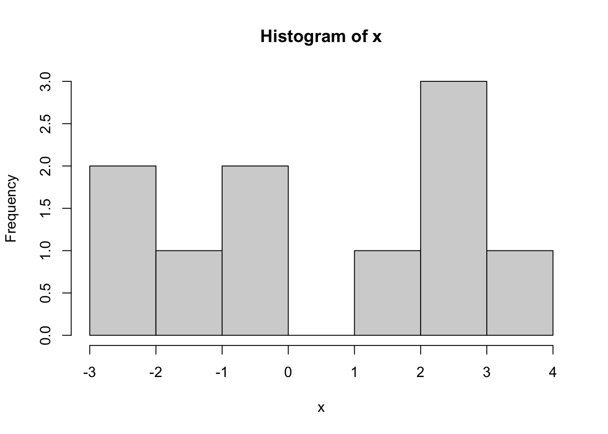
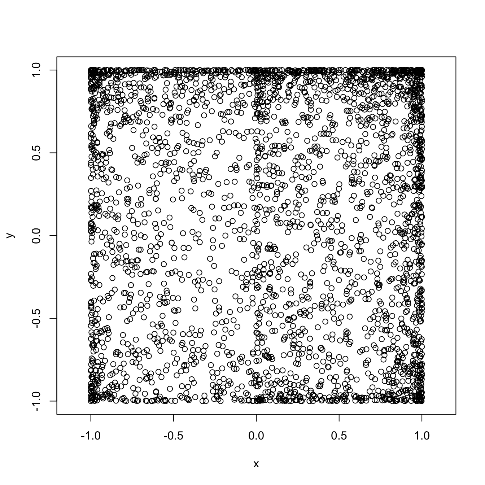
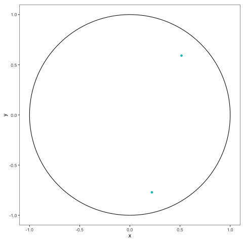
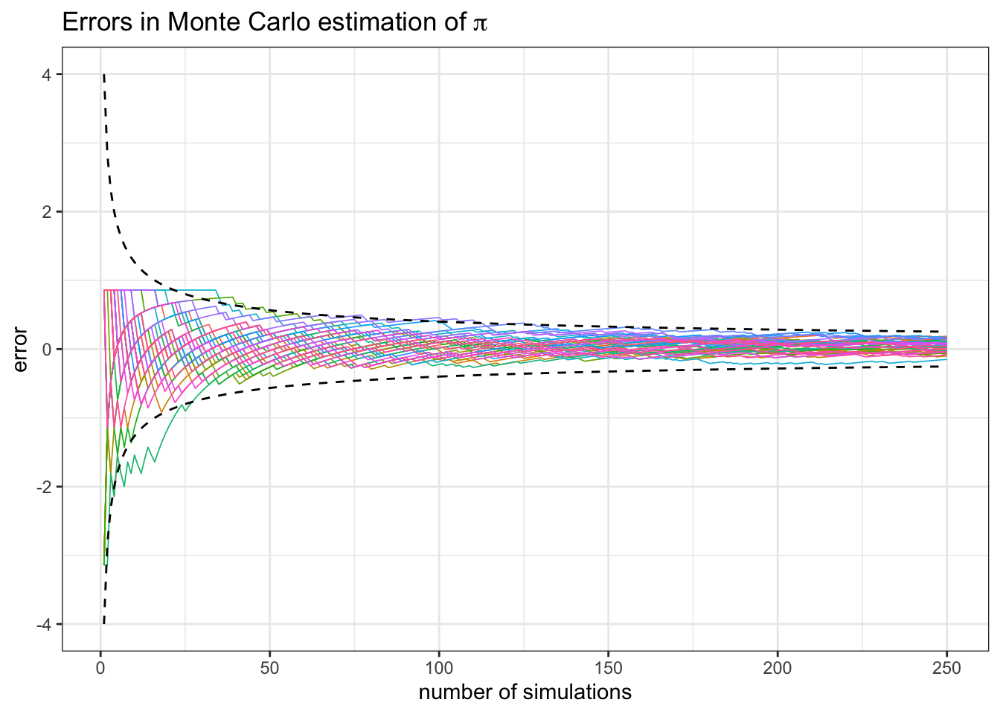
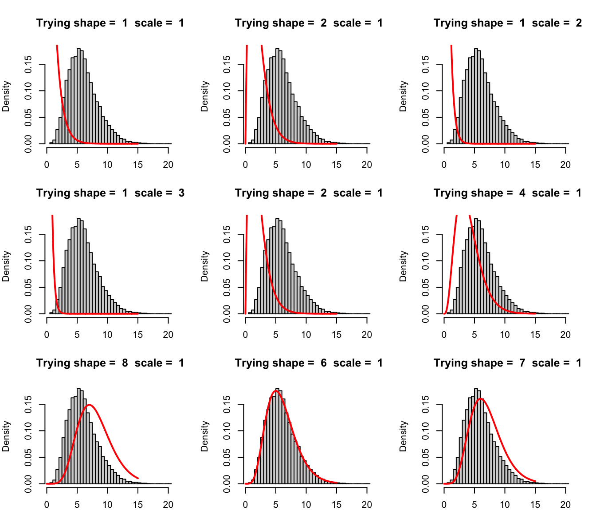

Chapter 2 Simulation of Random Variables and Monte Carlo
In the spirit of “learn by doing”, these lecture notes contain many “Problems”, both within the sections, and at the very end of each chapter. Those within sections come with solutions and usually introduce new concepts. They often feature a Comments section right after the solution subdivided into R and Math comments focusing on the computational or conceptual features, respectively. Note that you are not expected to be able to do the problems within sections before reading their solutions and comments, so don’t worry if you cannot. It is a good practice to try, though. Problems at the end, in the Additional Problems section are (initially) left unsolved. They do not require any new ideas and are there to help you practice the skills presented before.
2.1 Simulation of some common probability distributions
… where we also review some probability along the way.
Problem 2.1 “Draw” 50 simulations from the geometric distribution with parameter \(p=0.4\).
Solution.
rgeom(50,prob=0.4)
## [1] 1 0 3 4 1 2 0 0 2 2 0 1 5 0 1 0 2 1 1 0 2 2 2 1 0 0 1 3 2 2 1 1 1 3 5 0 1 1
## [39] 0 0 0 1 2 0 1 1 1 0 1 0Comments (R): R makes it very easy to simulate draws from a large class of named
distributions3,
such as geometric, binomial, uniform, normal, etc. For a list of all available
distributions, run help("distributions") Each available distribution has an R
name; the uniform is unif the normal is norm and the binomial is binom,
etc. If you want to simulate \(n\) draws (aka a sample of size \(n\)) from a
distribution, you form a full command by appending the letter r to its R name
and use \(n\) as an argument. That is how we arrived to rgeom(50) in the
solution above. The additional arguments of the function rgeom have to do with
the parameters of that distribution. Which parameters go with which
distributions, and how to input them as arguments to rgeom or rnorm is best
looked up in R’s extensive documentation. Try help("rnorm"), for example.
Comments (Math): You could spend your whole life trying to understand what it really means to “simulate” or “generate” a random number. The numbers you obtain from so-called random number generators (RNG) are never random. In fact, they are completely deterministically generated. Still, sequences of numbers obtained from (good) random number generators share so many properties with sequences of mythical truly random numbers, that we can use them as if they were truly random. For the purposes of this class, you can assume that the numbers R gives you as random are random enough. Random number generation is a fascinating topic at the intersection of number theory, probability, statistics, computer science and even philosophy, but we do not have the time to cover any of it in this class. If you want to read a story about a particularly bad random number generator, go here.
You might have encountered a geometric distribution before. A random variable with that distribution can take any positive integer value or \(0\), i.e., its support is \({\mathbb N}_0=\{0,1,2,3,\dots\}\). As you can see from the output above, the value \(0\) appears more often than the value \(3\), and the value \(23\) does not appear at all in this particular simulation run. The probability of seeing the value \(k\in \{0,1,2,3,\dots\}\) as a result of a single draw is given by \((1-p)^k p\), where \(p\) is called the parameter of the distribution.
That corresponds to the following interpretation of the geometric distribution: keep tossing a biased coin (with probability p of obtaining H) until you see the first H; the number Ts before that is that value your geometric random variable4 If we put these probabilities in a single table (and choose \(p=0.4\), for example) it is going to look like this:
| 0 | 1 | 2 | 3 | 4 | 5 | 6 | 7 | … | |
|---|---|---|---|---|---|---|---|---|---|
| Prob. | 0.4 | 0.24 | 0.144 | 0.086 | 0.052 | 0.031 | 0.019 | 0.011 | … |
Of course, the possible values our random variable can take do not stop at \(7\).
In fact, there are infinitely many possible values, but we do not have infinite
space. Note that even though the value \(23\) does not appear in the output of the
command rgeom above, it probably would if we simulated many more than \(50\)
values. Let’s try it with \(500\) draws - the table below counts how many \(0s\),
\(1s\), \(2s\), etc. we got:
| 0 | 1 | 2 | 3 | 4 | 5 | 6 | 7 | 8 | 9 | 10 |
|---|---|---|---|---|---|---|---|---|---|---|
| 208 | 132 | 62 | 43 | 23 | 16 | 8 | 3 | 2 | 1 | 2 |
Still no luck, but we do observe values above 5 more often. By trial and error, we arrive at about \(1,000,000\) as the required number of simulations:
| 0 | 1 | 2 | 3 | … | 23 | 24 | 25 | 26 |
|---|---|---|---|---|---|---|---|---|
| 400616 | 238946 | 144274 | 86489 | … | 3 | 3 | 3 | 3 |
Problem 2.2 Compute the probability that among \(1,000,000\) draws of a geometric random variable with parameter \(p=0.4\), we never see a number greater than \(22\).
Solution. First, we compute the probability that the value seen in a single draw does not exceed \(22\):
pgeom(22,prob=0.4)
## [1] 0.9999921Different draws are independent of each other, so we need to raise this to the power \(1,000,000\).
(pgeom(22, prob = 0.4))^(1000000)
## [1] 0.0003717335Comments (R): The command we used here is pgeom which is a cousin of rgeom. In
general, R commands that involve named probability distributions consist of two
parts. The prefix, i.e., the initial letter (p in this case) stands for the
operation you want to perform, and the rest is the R name of the distribution.
There are 4 prefixes, and the commands they produce are
| Prefix | Description |
|---|---|
r |
Simulate random draws from the distribution. |
p |
Compute the cumulative probability distribution function (cdf) (NOT pdf) |
d |
Compute the probability density (pdf) or the probability mass function (pmf) |
q |
Compute the quantile function |
(see the Math section below for the reminder of what these things are). In this
problem, we are dealing with a geometric random variable \(X\), which has a
discrete distribution with support \(0,1,2,3,\dots\). Therefore, the R name is
geom. We are interested in the probability \({\mathbb{P}}[ X\leq 22]\), which
corresponds to the cdf of \(X\) at \(x=22\), so we use the
the prefix p. Finally, we used the named parameter p and gave it the value p = 0.4, because the geometric distribution has a single parameter \(p\).
This problem also gives us a chance to discuss precision. As you can see, the probability of a single draw not exceeding \(22\) is very close to \(1\). In fact, it is equal to it to 5 decimal places. By default, R displays 7 significant digits of a number. That is enough for most applications (and barely enough for this one), but sometimes we need more. For example, let’s try to compute the probability of seeing no T (tails) in 10 tosses of a biased coin, where the probability of H (heads) is 0.9.
1-0.1^10
## [1] 1While very close to it, this probability is clearly not equal to \(1\), as suggested by the output above.
The culprit is the default precision. We can increase the precision (up to \(22\) digits) using the options command
options(digits=17)
1-0.1^10
## [1] 0.99999999989999999Precision issues like this one should not appear in this course, but they will out there “in the wild”, so it might be a good idea to be aware of them.
Comments (Math): If you forgot all about pdfs, cdfs and such things here is a little reminder:
| cdf | \(F(x) = {\mathbb{P}}[X\leq x]\) |
| \(f(x)\) such that \({\mathbb{P}}[X \in [a,b]] = \int_a^b f(x) \, dx\) for all \(a<b\) | |
| pmf | \(p(x)\) such that \({\mathbb{P}}[X=a_n] = p(a_n)\) for some sequence \(a_n\) |
| qf | \(q(p)\) is a number such that \({\mathbb{P}}[ X \leq q(p)] = p\) |
Those random variables that admit a pdf are called continuous. The prime examples are the normal, or the exponential distribution. The ones where a pmf exists are called discrete. The sequence \(a_n\) covers all values that such a, discrete, random variable can take. Most often, \(a_n\) either covers the set of all natural numbers \(0,1,2,\dots\) or a finite subset such as \(1,2,3,4,5,6\).
Coming back to our original problem, we note that the probability we obtained is quite small. Since \(1/0.000372\) is about \(2690\), we would have to run about \(2690\) rounds of \(1,000,000\) simulations before the largest number falls below \(23\).
Problem 2.3 Compute the \(0.05\), \(0.1\), \(0.4\), \(0.6\) and \(0.95\) quantiles of the normal distribution with mean \(1\) and standard deviation \(2\).
Solution.
qnorm( c(0.05, 0.1, 0.4, 0.6, 0.95), mean = 1, sd = 2)
## [1] -2.2897073 -1.5631031 0.4933058 1.5066942 4.2897073Comments (R): The function we used is qnorm, with the prefix q which computes the
quantile function and the R name norm because we are looking for the quantiles
of the normal distribution. The additional (named) parameters are where the
parameters of the distribution come in (the mean and the standard variation) in
this case. Note how we plugged in the entire vector
c(0.05, 0.1, 0.4, 0.6, 0.98) instead of a single value into qnorm. You can
do that because this function is vectorized. That means that if you give it
a vector as an argument, it will “apply itself” to each component of the vector
separately, and return the vector of results. Many (but not all) functions in R
are vectorized5.
As a sanity check, let’s apply pnrom (which computes the cdf of the normal) to these quantile values:
p = qnorm( c(0.05, 0.1, 0.4, 0.6, 0.95), mean = 1, sd = 2)
pnorm( p , mean = 1, sd = 2)
## [1] 0.05 0.10 0.40 0.60 0.95As expected, we got the original values back - the normal quantile function and its cdf are inverses of each other.
Comments (Math): Computing the cdf of a standard normal is the same thing reading a normal table. Computing a quantile is the opposite; you go into the middle of the table and find your value, and then figure out which “Z” would give you that value.
Problem 2.4 Simulate \(60\) throws of a fair \(10\)-sided die.
Solution.
sample( 1:10 , 60, replace = TRUE)
## [1] 2 8 9 8 4 7 7 7 2 3 3 10 6 1 9 7 4 7 6 2 2 3 10 1 9
## [26] 7 3 2 8 4 1 2 8 1 4 9 1 9 10 10 6 1 8 6 1 10 5 1 6 9
## [51] 8 3 8 9 4 6 1 6 7 8Comments (Math): Let \(X\) denote the outcome of a single throw of a fair \(10\)-sided die. The distribution of \(X\) is discrete (it can only take the values \(1,2,\dots, 10\)) but it is not one of the more famous named distributions. I guess you could call it a discrete uniform on \({1,2,\dots, 10}\), but a better way to describe such distribution is by a distribution table, which is really just a list of possible values a random variable can take, together with their, respective, probabilities. In this case,
| 1 | 2 | 3 | 4 | 5 | 6 | 7 | 8 | 9 | 10 |
|---|---|---|---|---|---|---|---|---|---|
| 0.1 | 0.1 | 0.1 | 0.1 | 0.1 | 0.1 | 0.1 | 0.1 | 0.1 | 0.1 |
Comments (R): The command used to draw a sample from a (finite) collection is, of, course
sample. The first argument is a vector, and it plays the role of the “bag”
from which you are drawing. If we are interested in repeated, random samples, we
also need to specify replace = FALSE otherwise, you could draw any single
number at most once:
sample(1:10, 8, replace = FALSE)
## [1] 1 5 6 7 8 10 3 4With more than 10 draws, we would run out of numbers to draw:
sample(1:10, 12, replace = FALSE)
## Error in sample.int(length(x), size, replace, prob): cannot take a sample larger than the population when 'replace = FALSE'The bag you draw from can contain objects other than numbers:
sample( c("Picard", "Data", "Geordi"), 9, replace = TRUE)
## [1] "Picard" "Data" "Geordi" "Geordi" "Data" "Data" "Picard" "Data"
## [9] "Geordi"sample command to produce a weighted sample, too. For example, if we
wanted to simulate \(10\) draws from the following distribution
| 1 | 2 | 3 |
|---|---|---|
| 0.2 | 0.7 | 0.1 |
we would use the additional argument prob:
sample( c(1,2,3), 10, replace = TRUE, prob = c(0.2,0.7, 0.1))
## [1] 1 2 2 1 1 2 2 3 2 2Note how it is mostly \(2\)s, as expected.
Problem 2.5 Draw a sample of size \(n=10\) from \(N(1,2)\), i.e., from the normal distribution with parameters \(\mu=1\), \(\sigma = 2\). Plot a histogram of the obtained values. Repeat for \(n=100\) and \(n=100000\).
Solution.
x = rnorm(10, mean = 1, sd = 2)
hist(x)
x = rnorm(100, mean = 1, sd = 2)
hist(x)
x = rnorm(100000, mean = 1, sd = 2)
hist(x)
Comments (R): It cannot be simpler! You use the command hist, feed it a vector of
values, and it produces a histogram. It will even label the axes for you. If you
want to learn how to tweak various features of your histogram, type ?hist.
Esthetically, the built-in histograms leave something to be desired. We can do better, using the package ggplot2. You don’t have to use it in this class, but if you want to, you install it first by running install.packages("ggplot2") (you have to do this only once). Then, every time you want to use it, you run library(ggplot2) to notify R that you are about to use a function from that package. It would take a whole semester to learn everything there is to know about ggplot2; I will only show what a histogram looks like in it:
library(ggplot2)
z = rnorm(100000, mean = 1, sd = 2)
ggplot(data=as.data.frame(z), aes(x=z))+
geom_histogram(bins=50, fill="white", color="DarkRed")
Comments (Math):. Mathematically, histogram can be produced for any (finite) sequence of
numbers: we divide the range into several bins, count how many of the points in
the sequence falls into each bin, and then draw a bar above that bin whose
height is equal (or proportional to) that count. The picture tells use about how
the sequence we started from is “distributed”. The order of the points does not
matter - you would get exactly the same picture if you sorted the points first.
If the sequence of points you draw the histogram of comes from, say, normal
distribution, the histogram will resemble the shape of the pdf of a normal
distribution. I say resemble, because its shape is ultimately random. If the
number of points is small (like in the second part of this problem) the
histogram may look nothing like the normal pdf. However, when the number of
points gets larger and larger, the shape of the histogram gets closer and closer
to the underlying pdf (if it exists). I keep writing “shape” because the three
histograms above have very different scales on the \(y\) axis. That is because we
used counts to set the vertical sizes of bins.
A more natural choice is to use the proportions, i.e. relative frequencies (i.e.
counts divided by the total number of points) for bar heights. More precisely,
the bar height \(h\) over the bin \([a,b]\) is chosen so that the area of the bar,
i.e., \((b-a)\times h\) equals to the proportion of all points that fall inside
\([a,b]\). This way, the total area under the histogram is always \(1\). To draw
such a density histogram in R we would
need to add the additional option freq = FALSE to hist:
x = rnorm(100000, mean = 1, sd = 2)
hist(x,freq = FALSE)
Note how the \(y\)-axes label changed from “Frequency” to “Density”. With such a normalization, the histogram of \(x\) can be directly compared to the probability density of a normal distribution. Here is a histogram of \(100,000\) simulations from our normal distribution with its density function (pdf) superimposed:
sims = rnorm(10000, mean = 1, sd = 2)
x = seq(-6,8,by=0.02)
y = dnorm(x, mean = 1, sd = 2)
hist(sims, freq=FALSE, main = "")
points(x,y, type="l", lwd=3, col="red" )
2.2 Multivariate Distributions
Problem 2.6 Let x contain \(2,000\) draws from \(N(0,1)\), z another \(2,000\) draws from \(N(0,1)\) and let y=x^2+z.
Draw a scatterplot of
xandyto visualize the joint distribution ofxandyPlot two histograms, one of
xand one ofy. Do they tell the whole story about the joint distribution ofxandy?Are
xandycorrelated? Doxandyin your plot “look independent”? Use the permutation test to check of independence betweenxandy.
Solution.
x = rnorm(2000)
z = rnorm(2000)
y = x^2+z
plot(x,y)
hist(x)
hist(y)
No, the two histograms would not be enough to describe the joint distribution. There are many ways in which two random variables \(X\) and \(Y\) can be jointly distributed, but whose separate (marginal) distributions match the histograms above. To give a very simple example, let \(X\) and \(Y\) be discrete random variables, each of which can only take values \(0\) or \(1\). Consider the following two possible joint distribution tables for the random pair \((X,Y)\):
|
|
In both cases, the marginals are the same, i.e., both \(X\) and \(Y\) are equally likely to take the value \(0\) or \(1\), i.e., they both have the Bernoulli distribution with parameter \(p=1/2\). That would correspond to the separate histograms to be the same. On the other hand, their joint distributions (aka dependence structures) are completely different. In the first (left) case, \(X\) and \(Y\) are independent, but in the second they are completely dependent.
They are probably not correlated since the sample correlation between x
and y is close to \(0\):
(cor(x,y))
## [1] -0.02880239but they do not look independent.
To apply the permutation test, we first plot the scatterplot of x vs. y as
above. Then, we replace y by a vector with the same components, but randomly
permute their positions, and then plot a scatterplot again. We repeat this three
times:
y_perm_1 = sample(y)
y_perm_2 = sample(y)
y_perm_3 = sample(y)
plot(x,y)
plot(x,y_perm_1)
plot(x,y_perm_2)
plot(x,y_perm_3)
The conclusion is clear, the first (upper-left) plot is very different than the
other three. Therefore, x and y are probably not independent.
Comments (Math): The point of this problem is to review the notion of the joint distribution between two random variables. The most important point here is that there is more to the joint distribution of two random vectors, than just the two distributions taken separately. In a sense, the whole is (much) more than the sum of its parts. This is something that does not happen in the deterministic world. If you give me the \(x\)-coordinate of a point, and, separately, its \(y\)-coordinate, I will be able to pinpoint the exact location of that point.
On the other hand, suppose that the \(x\)-coordinate of a point is unknown, so we treat it as a random variable, and suppose that this variable admits the standard normal distribution. Do the same for \(y\). Even with this information, you cannot say anything about the position of the point \((x,y)\). It could be that the reason we are uncertain about \(x\) and the reason we are uncertain about \(y\) have nothing to do with each other; in that case we would be right to assume that \(x\) and \(y\) are independent. If, on the other hand, we got the values of both \(x\) and \(y\) by measuring them using the same, inaccurate, tape measure, we cannot assume that the errors are independent. It is more likely that both \(x\) and \(y\) are too big, or both \(x\) and \(y\) are too small.
Mathematically, we say that random variables \(X\) and \(Y\) are independent if
\[{\mathbb{P}}[X \in [a,b]] \times {\mathbb{P}}[ Y \in [c,d] ] = {\mathbb{P}}[ X\in [a,b] \text{ and } Y\in [c,d]]\text{ for all } a,b,c,d.\]
While up to the point,
this definition is not very eye-opening, or directly applicable in most cases.
Intuitively, \(X\) and \(Y\) are independent if the distribution of \(Y\) would not
change if we received additional information about \(X\). In our problem, random
variables \(X\) and \(Y\) correspond to vectors x and y. Their scatterplot above
clearly conveys the following message: when x is around \(-2\), we expect y to
be around 4, while when x is around \(0\), y would be expected to be around
\(0\), too.
Sometimes, it is not so easy to decide whether two variables are independent by staring at a scatterplot. What would you say about the scatterplot below?
 The permutation test is designed to help you decide when two (simulated)
random variables are likely to be independent. The idea is simple. Suppose that
The permutation test is designed to help you decide when two (simulated)
random variables are likely to be independent. The idea is simple. Suppose that
x and y are simulations from two independent (not necessarily identical)
distributions; say x=runif(1000) and y=rnorm(1000). The vector
y_perm=sample(y) is a randomly permuted version of y (see R section below)
and it contains exactly the same information about the distribution of y as
y itself does. Both y and y_perm will produce exactly the same histogram.
Permuting y, however, “uncouples” it from x. If there was any dependence
between the values of x and y before, there certainly isn’t any now. In
other the joint distribution of x and y_perm has the same marginals as the
joint distribution of x and y, but all the (possible) dependence has been
removed. What remains is to compare the scatterplot between x and y and the
scatterplot between x and y_perm. If they look about the same, we conclude
that x and y are independent. Otherwise, there is some dependence between
them.
One question remains: why did we have to draw three scatterplots of permuted
versions of y? That is because we have only finitely many data points, and it
can happen, by pure chance, that the permutation we applied to y does not
completely scramble its dependence on x. With a “sample” of three such plots,
we
get a better feeling for the inherent randomness in this permutation procedure,
and it is much easier to tell whether “one of these things is not like the
others”. Btw, the random variables in the scatterplot above are, indeed,
independent; here are the \(4\) permutation-test plots to “prove” it:

Unlike univariate (one-variable) distributions which are visualized using
histograms or similar plots, multivariate (several-variable) distributions are
harder to depict. The most direct relative of the histogram is a 3d
histogram. Just like the \(x\)-axis is divided into bins in the univariate case,
in the multivariate case we divide the \(xy\)-plane into regions (squares, e.g.)
and count the number of points falling into each of these regions. After that
a 3d bar (a skyscraper) is drawn above each square with the height of each
skyscraper equal (or proportional) to the number of points which fall into its
base. Here is a 3d histogram of our original pair (x,y) from the problem.
You should be able to rotate and zoom it right here in the notes, provided your
browser has JavaScript enabled:
## Warning: `includeHTML()` was provided a `path` that appears to be a complete HTML document.
## ✖ Path: pics/3dhist.html
## ℹ Use `tags$iframe()` to include an HTML document. You can either ensure `path` is accessible in your app or document (see e.g. `shiny::addResourcePath()`) and pass the relative path to the `src` argument. Or you can read the contents of `path` and pass the contents to `srcdoc`.A visualization solution that requires less technology would start the same way, i.e., by dividing the \(xy\) plane into regions, but instead of the third dimension, it would use different colors to represent the counts. Here is an example where the regions are hexagons, as opposed to squares; it just looks better, for some reason:

Just to showcase the range of possibilities, here is another visualization technique which which requires deeper statistical tools, namely the density contour plot: 
Comments (R): There is very little new R here. You should remember that if x and y are
vectors of the same length, plot(x,y) gives you a scatterplot of x and y.
To compute the sample correlation between two vectors, use the cor.
We used the command sample(y) to obtain a randomly permuted version of y.
The simplicity of this is due to default parameters of the command sample
which we already learned about. In particular, the default number of samples is
exactly the size of the input vector y and, by default, sampling is performed
without replacement. If you think about it for a second, you will realize that
a sample of size \(n\) from the vector of size \(n\) without replacement is
nothing by a random permutation of y.
You are not required to do this in your submissions, but if you want to display
several plots side-by-side, use the command par(mfrow=c(m,n)) before the command
plot. It tells R to plot the next \(mn\) plots in a \(m\times n\) grid.
Problem 2.7 Let the random variables \(X\) and \(Y\) have the joint distribution given by the following table:
| 1 | 2 | 3 | |
|---|---|---|---|
| 1 | 0.1 | 0.2 | 0.3 |
| 2 | 0.2 | 0.2 | 0.0 |
Simulate \(10,000\) draws from the distribution of \((X,Y)\) and display a contingency table of your results.
Solution.
joint_distribution_long = data.frame(
x = c(1, 1, 1, 2, 2, 2),
y = c(1, 2, 3, 1, 2, 3)
)
probabilities_long =
c(0.1, 0.2, 0.3, 0.2, 0.2, 0.0)
sampled_rows = sample(
x = 1:nrow(joint_distribution_long),
size = 10000,
replace = TRUE,
prob = probabilities_long
)
draws = joint_distribution_long[sampled_rows, ]
table(draws)
## y
## x 1 2 3
## 1 962 2027 3047
## 2 1945 2019 0Comments (Math): The main mathematical idea is to think of each pair of possible values of \(X\) and \(Y\) as a separate “object”, put all these objects in a “bag”, then then draw from the bag. In other words, we convert the bivariate distribution from the problem to the following univariate distribution
| (1,1) | (1,2) | (1,3) | (2,1) | (2,2) | (2,3) |
|---|---|---|---|---|---|
| 0.1 | 0.2 | 0.3 | 0.2 | 0.2 | 0 |
and sample from it. When you do, you will get a vector whose elements are pairs of numbers. The last step is to extract the components of those pairs into separate vectors.
Comments (R): The most important new R concept here is data.frame. You should think of
it as a spreadsheet. It is, mathematically, a matrix, but we do not perform any
mathematical operations on it. Moreover, not all columns in the data frame have
to be numeric. Some of them can be strings, and other can be something even more
exotic. You should think of a data frame as a bunch of column vectors of the
same length stacked side by side. It is important to note that each column of a
data frame will have a name, so that we don’t have to access it by its position
only (as we would have to in the case of a matrix).
In this class, the column vectors of data frames are going to contain simulated values. In statistics, it is data that comes in data frames, with rows corresponding to different observations, and columns to various observed variables.
The easiest way to construct a data frame using already existing vectors is as follows:
x = c(1,2,3)
y = c("a","b","c")
(df=data.frame(x,y))
## x y
## 1 1 a
## 2 2 b
## 3 3 cNote that the two columns inherited their names from the vectors x and y
that fed into them. Note, also, that all rows got consecutive numerical values
as names by default. Row names are sometimes useful to have, but are in general
a nuisance and should be ignored (especially in this class). Column names are
more important, and there is a special notation (the dollar-sign notation) that
allows you to access a column by its name:
df$y
## [1] "a" "b" "c"If you want to give your columns custom names (or if you are building them out of explicitly given vectors as in the solution above) use the following syntax
z = c("a","b","c","d")
(df = data.frame( letters = z, numbers = c(1,2,3,4)))
## letters numbers
## 1 a 1
## 2 b 2
## 3 c 3
## 4 d 4A feature that data frames share with vectors and matrices is that you can use vector indexing as in the following example (where df is as above)
df[c(2,4,4,1),]
## letters numbers
## 2 b 2
## 4 d 4
## 4.1 d 4
## 1 a 1Make sure you understand why the expression inside the brackets is c(2,4,4,1),
and not c(2,4,4,1). R’s desire to keep row names unique leads to some
cumbersome constructs such as 4.1 above. As I mentioned before, just disregard
them.
A nice thing about data frames is that they can easily be pretty-printed in RStudio. Go to the Environment tab in one of your RStudio panes, and double click on the name of the data frame you just built. It will appear as a nicely formatted spreadsheet.
Once we have the data frame containing all \(6\) pairs of possible values \(X\) and
\(Y\) can take (called joint_distribution_long in the solution above), we can
proceed by sampling from its rows, by sampling from the set 1,2,3,4,5,6 with
probabilities 0.1, 0.2, 0.3, 0.2, 0.2, 0.0. The result of the corresponding
sample command will be a sequence - called sampled_rows in the solution - of
length \(10,000\) composed of numbers \(1,2,3,4,5\) or \(6\). The reason we chose the
name sampled_rows is because each number corresponds to a row from the data
frame joint_distribution_long, and by indexing joint_distribution_long by
sampled_rows we are effectively sampling from its rows. In other words, the
command joint_distribution_long[sampled_rows, ] turns a bunch of numbers into
a bunch of rows (many of them repeated) of the data frame
joint_distribution_long.
The final step is to use the function table. This time, we are applying it to
a data frame and not to a vector, but the effect is the same. It tabulates all
possible combinations of values of the columns, and counts how many times each
of them happened. The same result would have been obtained by calling
table(draws$x, draws$y).
2.3 Monte Carlo
Problem 2.8 Use Monte Carlo to estimate the expected value of the exponential random variable with parameter \(\lambda= 4\) using \(n=10\), \(n=1,000\) and \(n=1,000,000\) simulations. Compare to the exact value.
Solution.
x = rexp(10, rate=4)
mean(x)
## [1] 0.1779768For an exponential random variable with parameter \(\lambda\), the expected value is \(1/\lambda\) (such information can be found in Appendix A) which, in this case, is \(0.25\). The error made was 0.072023 for \(n=10\) simulations.
We increase the number of simulations to \(n=1000\) and get a better result
x = rexp(1000, rate=4)
mean(x)
## [1] 0.2564643with (smaller) error -0.0064643. Finally, let’s try \(n=1,000,000\):
x = rexp(1000000, rate=4)
mean(x)
## [1] 0.250381The error is even smaller -0.00038101.
Comments (R): The only new thing here is the command mean which computes the mean of a vector.
Comments (Math): There is a lot going on here conceptually. This is the first time we used the Monte Carlo method. It is an incredibly useful tool, as you will keep being reminded throughout this class. The idea behind it is simple, and it is based on the Law of large numbers:
Theorem Let \(X_1,X_2, \dots\) be an independent sequence of random
variables with the same distribution, for which the expected value can be
computed. Then
\[ \tfrac{1}{n} \Big( X_1+X_2+\dots+X_n\Big) \to {\mathbb{E}}[X_1] \text{ as } n\to\infty\]
The idea behind Monte Carlo is to turn this theorem “upside down”. The goal is
to compute \({\mathbb{E}}[X_1]\) and use a supply of random numbers, each of which
comes from the same distribution, to accomplish that. The random number
generator inside rexp gives us a supply of numbers (stored in the vector x)
and all we have to do is compute their average. This gives us the left-hand side
of the formula above, and, if \(n\) is large enough, we hope that this average
does not differ too much from its theoretical limit. As \(n\) gets larger, we
expect better and better results. That is why your error above gets smaller as
\(n\) increases.
It looks like Monte Carlo can only be used to compute the expected value of a random variable, which does not seem like such a bit deal. But it is! You will see in the sequel that almost anything can be written as the expected value of some random variable.
Problem 2.9 Use Monte Carlo to estimate \({\mathbb{E}}[X^2]\), where \(X\) is a standard normal random variable.
Solution. You may or may now know that when \(X\) is standard normal \(Y=X^2\) has a \(\chi^2\) distribution with one degree of freedom. If you do, you can solve the problem like this:
y = rchisq(5000 ,df=1)
mean(y)
## [1] 0.9771929If you don’t, you can do the following:
x = rnorm(5000)
y = x^2
mean(y)
## [1] 1.019852Comments (Math+R): We are asked to compute \({\mathbb{E}}[ X^2]\), which can be interpreted in
two ways. First, we can think of \(Y=X^2\) as a random variable in its own right and you
can try to take draws from the distribution of \(Y\). In the case of the normal
distribution, the distribution of \(Y\) is known - it happens to be a
\(\chi^2\)-distribution with a single degree of freedom (don’t worry if you never
heard of it). We can simulate it in R by using its R name chisq and
get a number close to the exact value of \(1\).
If you did not know about the \(\chi^2\) distribution, you would not know what R
name to put the prefix r in front of. What makes the simulation possible is
the fact that \(Y\) is a transformation of
a random variable we know how to simulate. In that case, we simply simulate the
required number of draws x from the normal distribution (using rnorm) and
then apply the transformation \(x \mapsto x^2\) to the result. The transformed
vector y is then nothing but the sequence of draws from the distribution of
\(X^2\).
The idea described above is one of main advantages of the Monte Carlo technique: if you know how to simulate a random variable, you also know how to simulate any (deterministic) function of it. That fact will come into its own a bit later when we start working with several random variables and stochastic processes, but it can be very helpful even in the case of a single random variable, as you will see in the next problem.
Problem 2.10 Let \(X\) be a standard normal random variable. Use Monte Carlo to estimate the probability \({\mathbb{P}}[ X > 1 ]\). Compare to the exact value.
Solution. The estimated probability:
x = rnorm(10000)
y = x > 1
(p_est = mean(y))
## [1] 0.1608The exact probability and the error
p_true = 1-pnorm(1)
(err = p_est-p_true)
## [1] 0.002144746Comments (R): As we learned before, the symbol > is an operation, which returns a Boolean (TRUE or FALSE) value. For example:
1>2
## [1] FALSE5^2>20
## [1] TRUEIt is vectorized:
x = c(1,2,4)
y = c(5,-4,3)
x>y
## [1] FALSE TRUE TRUEand recycling rules apply to it (so that you can compare a vector and a scalar, for example)
x = 1:10
x>5
## [1] FALSE FALSE FALSE FALSE FALSE TRUE TRUE TRUE TRUE TRUETherefore, the vector y in the solution is a vector of length \(10000\) whose
elements are either TRUE or FALSE; here are the first 5 rows of data frame
with columns x and y from our solution:
| x | y |
|---|---|
| 1.9493 | FALSE |
| -1.1015 | TRUE |
| 1.0448 | TRUE |
| -0.1384 | TRUE |
| -0.2573 | TRUE |
Finally, z contains the mean of y. How do you compute a mean of Boolean values? In R (and many other languages) TRUE and FALSE have default numerical values, usually \(1\) and \(0\). This way, when \(R\) is asked to compute the sum of a Boolean vector it will effectively count the number of values which are TRUE. Similarly, the mean is the relative proportion of TRUE values.
Comments (Math): We computed the proportion of the “times” \(X>1\) (among many simulations of \(X\)) and used it to approximate the probability \({\mathbb{P}}[ X>1]\). More formally, we started from a random variable \(X\) with a normal distribution and then transformed it into another random variable, \(Y\), by setting \(Y=1\) whenever \(X>1\) and \(0\) otherwise. This is often written as follows \[ Y = \begin{cases} 1, & X>1 \\ 0, & X\leq 1.\end{cases}\] The random variable \(Y\) is very special - it can only take values \(0\) and \(1\) (i.e., its support is \(\{0,1\}\)). Such random variables are called indicator random variables, and their distribution, called the Bernoulli distribution, always looks like this:
| 0 | 1 |
|---|---|
| 1-p | p |
for some \(p \in [0,1]\). The parameter \(p\) is nothing but the probability \({\mathbb{P}}[Y=1]\).
So why did we decide to transform \(X\) into \(Y\)? Because of the following simple fact: \[ {\mathbb{E}}[ Y] = 1 \times p + 0 \times (1-p) = p.\] The expected value of an indicator is the probability \(p\), and we know that we can use Monte Carlo whenever we can express the quantity we are computing as an expected value of a random variable we know how to simulate.
Many times, simulating a random variable is easier than analyzing it analytically. Here is a fun example:
Problem 2.11 Use Monte Carlo to estimate the value of \(\pi\) and compute the error.
Solution.
nsim = 1000000
x = runif(nsim,-1, 1)
y = runif(nsim,-1, 1)
z = (x ^ 2 + y ^ 2) < 1
(pi_est = 4 * mean(z))
## [1] 3.141728
(err = pi_est - pi)
## [1] 0.0001353464Comments (Math):  As we learned in the previous problem, probabilities of events can be computed using Monte Carlo, as long as we know how to simulate the underlying indicator random variable. In this case, we want to compute \(\pi\), so we would need to find a “situation” in which the probability of something is \(\pi\). Of course, \(\pi>1\), so it cannot be a probability of anything, but \(\pi/4\) can, and computing \(\pi/4\) is as useful as computing \(\pi\). To create the required probabilistic “situation” we think of the geometric meaning of \(\pi\), and come up with the following scheme. Let \(X\) and \(Y\) be two independent uniform random variables each with values between \(-1\) and \(1\). We can think of the pair \((X,Y)\) as a random point in the square \([-1,1]\times [-1,1]\). This point will sometimes fall inside the unit circle, and sometimes it will not. What is the probability of hitting the circle? Well, since \((X,Y)\) is uniformly distributed everywhere inside the square, this probability should be equal to the portion of the area of our square which belongs to the unit circle. The area of the square is \(4\) and the area of the circle is \(\pi\), so the required probability is \(\pi/4\). Using the idea from the previous problem, we define the indicator random variable \(Z\) as follows \[ Z = \begin{cases} 1 & (X,Y) \text{ is inside the unit circle, } \\ 0 & \text{ otherwise.} \end{cases} = \begin{cases} 1& X^2+Y^2 < 1, \\ 0 & \text{ otherwise.} \end{cases}\]
Problem 2.12
1. Write an R function cumavg which computes the sequence of running averages of a vector, i.e., if the input is \(x=(x_1,x_2,x_3,\dots, x_n)\), the output should be
\[ \Big(x_1, \frac{1}{2} (x_1+x_2), \frac{1}{3}(x_1+x_2+x_3), \dots, \frac{1}{n} (x_1+x_2+\dots+x_n)\Big).\] Test it to check that it really works. (Hint: look up the function cumsum. )
- Apply
cumavgto the vector \(4 z\) from the previous problem and plot your results (use a smaller value fornsim. Maybe \(1000\).) Plot the values against their index. Add a red horizontal line at the level \(\pi\). Rerun the same code (including the simulation part) several times.
Solution.
- Once you know about the function
cumsum, the problem becomes much easier.
cumavg = function(x) {
c = cumsum(x)
n = 1:length(x)
return(c / n)
}
x = c(1, 3, 5, 3, 3, 9)
cumavg(x)
## [1] 1 2 3 3 3 4nsim = 1000
x = runif(nsim,-1, 1)
y = runif(nsim,-1, 1)
z = (x ^ 2 + y ^ 2) < 1
pi_est = cumavg(4 * z)
plot(
1:nsim,
pi_est,
type = "l",
xlab = "number of simulations",
ylab = "estimate of pi",
main = "Computing pi by Monte Carlo"
)
abline(pi, 0,
col = "red")
Comments (R): This course is not about R graphics, but I think it is a good idea to teach you how to make basic plots in R. We already used the function plot to draw scatterplots.
By default, each point drawn by plot is marked by a small circle so it might not seem like a good idea to use it. Luckily this, and many other things, can be adjusted by numerous additional arguments. One of such arguments is type which determines the type of the plot. We used type="l" which tells R to join the points with straight lines:
x = c(1,3,4,7)
y = c(2,1,5,5)
plot(x,y, type="l") The other arguments,
The other arguments, xlab, ylab and main determine labels for axes and the entire plot. The function abline(a,b) adds a line \(y = a x + b\) to an already existing plot. It is very useful in statistics if one wants to show the regression line superimposed on the scatterplot of data. Finally, the argument col, of course, determines the color of the line. To learn about various graphical parameters, type ?par.
Comments (Math): The conceptual reason for this exercise is to explore (numerically) the kinds of errors we make when we use Monte Carlo. Unlike the deterministic numerical procedures, Monte Carlo has a strange property that no bound on the error can be made with absolute certainty. Let me give you an example. Suppose that you have a biased coin, with the probability \(0.6\) of heads and \(0.4\) of tails. You don’t know this probability, and use a Monte Carlo technique to estimate it - you toss your coin \(1000\) times and record the number of times you observe \(H\). The law of large numbers suggests that the relative frequency of heads is close to the true probability of \(H\). Indeed, you run a simulation
x = sample( c("T","H"), 1000, prob = c(0.4, 0.6), replace = TRUE)
y = x == "H"
mean(y)
## [1] 0.594and get a pretty accurate estimate of \(0.594\). If you run the same code a few more times, you will get different estimates, but all of them will be close to \(0.6\). Theoretically, however, your simulation could have yielded \(1000\) Hs, which would lead you to report \(p=1\) as the Monte-Carlo estimate. The point is that even though such disasters are theoretically possible, they are exceedingly unlikely. The probability of getting all \(H\) in \(1000\) tosses of this coin is a number with more than \(500\) zeros after the decimal point.
The take-home message is that even though there are no guarantees, Monte Carlo performs well the vast majority of the time. The crucial ingredient, however, is the number of simulations. The plot you were asked to make illustrates exactly that. The function cumavg gives you a whole sequence of Monte-Carlo estimates of the same thing (the number \(\pi\)) with different numbers of simulations nsim. For small values of nsim the error is typically very large (and very random). As the number of simulations grows, the situations stabilizes and the error decreases. Without going into the theory behind it, let me only mention is that in the majority of practical applications we have the following relationship:
\[ error \sim \frac{1}{\sqrt{n}}.\]
In words, if you want to double the precision, you need to quadruple the number of simulations. If you want an extra digit in your estimate, you need to multiply the number of simulations by \(100\). Here is an image where I superimposed \(40\) plots like the one you were asked to produce (the dashed lines are \(\pm \frac{4}{\sqrt{n}}\)):

2.4 Conditional distributions
Problem 2.13 Let \(X\) and \(Y\) be two independent geometric random variables with parameters \(p=0.5,\) and let \(Z=X+Y\). Compute \({\mathbb{P}}[ X = 3| Z = 5]\) using simulation. Compare to the exact value.
Solution. By simulation:
nsim = 1000000
X = rgeom(nsim, prob = 0.5)
Y = rgeom(nsim, prob = 0.5)
Z = X + Y
X_cond = X[Z == 5]
mean(X_cond == 3)
## [1] 0.1684758To get the exact value, we start from the definition: \[ {\mathbb{P}}[ X = 3 | Z= 5 ] = \frac{{\mathbb{P}}[ X=3 \text{ and }Z=5]}{{\mathbb{P}}[Z=5]} = \frac{{\mathbb{P}}[X=3 \text{ and }Y = 2]}{{\mathbb{P}}[Z=5]}, \] where the last equality follows from the fact that \(\{ X=3 \text{ and } Z=5 \}\) is exactly the same event as \(\{ X = 3 \text{ and } Y=2\}\). Since \(X\) and \(Y\) are independent, we have \[{\mathbb{P}}[ X=3 \text{ and }Y=2 ] = {\mathbb{P}}[X=3] \times {\mathbb{P}}[ Y=2] = 2^{-4} 2^{-3} = 2^{-7}.\] To compute \({\mathbb{P}}[ Z = 5]\) we need to split the event \(\{ Z = 5 \}\) into events we know how to deal with. Since \(Z\) is built from \(X\) and \(Y\), we write \[ \begin{align} {\mathbb{P}}[ Z = 5 ] = &{\mathbb{P}}[X=0 \text{ and }Y=5]+ {\mathbb{P}}[ X=1 \text{ and }Y=4] + {\mathbb{P}}[ X=2 \text{ and }Y=3] + \\ & {\mathbb{P}}[ X=3 \text{ and }Y=2] + {\mathbb{P}}[ X=4 \text{ and }Y=1] + {\mathbb{P}}[ X = 5 \text{ and }Y=0]. \end{align}\] Each of the individual probabilities in the sum above is \(2^{-7}\), so \({\mathbb{P}}[ X = 3 | Z = 5] = \frac{1}{6}\). This gives us an error of 0.0018091.
Comments (Math): Let us, first, recall what the conditional probability is. The definition we learn in the probability class is the following \[ {\mathbb{P}}[A | B] = \frac{{\mathbb{P}}[A \text{ and }B]}{{\mathbb{P}}[B]},\] as long as \({\mathbb{P}}[B]>0\). The interpretation is that \({\mathbb{P}}[A|B]\) is still the probability of \(A\), but now in the world where \(B\) is guaranteed to happen. Conditioning usually happens when we receive new information. If someone tells us that \(B\) happened, we can disregard everything in the complement of \(B\) and adjust our probability to account for that fact. First we remove from \(A\) anything that belongs to the complement of \(B\), and recompute the probability \({\mathbb{P}}[A \cap B]\). We also have to divide by \({\mathbb{P}}[B]\) because we want the total probability to be equal to \(1\).
Our code starts as usual, but simulating \(X\) and \(Y\) from the required
distribution, and constructing a new vector \(Z\) as their sum. The variable
X_cond is new; we build it from \(X\) by removing all the elements whose
corresponding \(Z\) is not equal to \(5\). This is an example of what is sometimes
called the rejection method in simulation. We simply “reject” all
simulations which do not satisfy the condition we are conditioning on. We can
think of X_cond as bunch of simulations of \(X\), but in the world where \(Z=5\)
is guaranteed to happen. Once we have X_cond, we proceed as usual by computing
the relative frequency of the value \(3\) among all possible values \(X\) can take.
Note that the same X_cond can also be used to compute the conditional
probability \({\mathbb{P}}[ X=1| Z=5]\). In fact, X_cond contains the information about
the entire conditional distribution of \(X\) given \(Z=5\); if we draw a
histogram of X_cond, we will get a good idea of what this distribution looks
like:

Since X_cond contains only discrete values from \(0\) to \(5\), a contingency
table might be a better tool for understanding its distribution:
| 0 | 1 | 2 | 3 | 4 | 5 |
|---|---|---|---|---|---|
| 7745 | 7761 | 7691 | 7807 | 7731 | 7604 |
The histogram and the table above suggest that the distribution of \(X\), given \(Z=5\), is uniform on \(\{0,1,2,3,4,5\}\). It is - a calculation almost identical to the one we performed above gives that \({\mathbb{P}}[ X= i| Z=5] = \frac{1}{6}\) for each \(i=0,1,2,3,4,5\).
One more observation at the end. Note that we drew \(n=1,000,000\) simulations this time. While it is probably an overkill for this particular example, conditional probabilities in general require more simulations than unconditional ones. Of course, that is because we reject most of our original draws. Indeed, the size of the vector X_cond is 46339 - more than a \(20\)-fold decrease. This fact becomes particularly apparent when we try to use Monte Carlo for conditional distributions associated with continuous random vectors as we will see in out next problem.
Problem 2.14 Let \(X\) and \(Y\) be independent random variables where \(X\) has the \(N(0,1)\) distribution and \(Y\) the exponential distribution with parameter \(\lambda=1\). Find a graphical approximation to the conditional density of \(Y\), given \(X+Y\geq 1\). Repeat the same, but condition on \(X+Y=1\).
Solution.
nsim=100000
x=rnorm(nsim)
y=rexp(nsim)
cond = x+y >= 1
x_cond=x[cond]
hist(x_cond, breaks=100)
nsim=100000
eps=0.1
x=rnorm(nsim)
y=rexp(nsim)
cond = (1-eps < x+y) & (x+y<1+eps)
x_cond=x[cond]
hist(x_cond, breaks=100)
Comments (Math): In the case of conditioning on \(X+Y\geq 1\) we repeated the same procedure as in the discrete case. We simply rejected all draws that do not satisfy the condition.
When Conditioning on \(X+Y=1\), however, you immediately encounter a problem that you don’t get with discrete distributions. The event \(\{ X+Y=1\}\) has probability \(0\) and will never happen.
That means that our strategy form the previous problem will simply not work - you will reject all draws. The problem goes beyond a particular approach to the problem, as the conditional probabilities such as \({\mathbb{P}}[ Y \geq 0 | X+Y=1]\) are not well defined. Indeed, the formula
\[ {\mathbb{P}}[ Y \geq 0 | X+Y=1] "=" \frac{{\mathbb{P}}[ Y\geq 0 \text{ and } X+Y=1]}{ {\mathbb{P}}[X+Y=1]}\]
requires that the probability in the denominator be strictly positive. Otherwise you are dividing by zero. The theoretical solution to this is by no means simple and requires mathematics beyond the scope of these notes. Practically, there is a very simple way of going around it. Instead of conditioning on the zero-probability event \(X+Y=1\), we use a slightly more relaxed condition
\[ X+Y \in (1-\varepsilon, 1+\varepsilon) \] for a small, but positive, \(\varepsilon\). In many cases of interest, this approximation works very well, as long as \(\varepsilon\) is not too big. How big? Well, that will depend on the particular problem, as well as on the number of simulations you are drawing. The best way is to try several values and experiment. For example, if we chose \(\varepsilon=0.01\) in our problem, the number of elements in x_cond (i.e., the number of non-rejected draws) would be on the order of \(100\), which may be considered to small to produce an accurate histogram. On the other hand, when \(\varepsilon=1\), your result will be inaccurate because you are conditioning on the event
\(0 < X+Y < 2\) which is a poor approximation for \(X+Y=1\). The rule of thumb is to take the smallest \(\varepsilon\) you can, while keeping the number of non-rejected draws sufficiently large.
2.5 Additional Problems for Chapter 2
Problem 2.15
Find the Weibull distribution in R’s help system. Simulate \(n=10000\) draws from the Weibull distribution with shape parameter \(2\) and scale parameter \(3\). Draw a histogram of your simulations.
Suppose that the vector
xcontains \(n=10000\) simulations from the standard normal \(\mu=0, \sigma=1)\). Without simulating any new random numbers, transform it into the vectorysuch thatyis a vector of \(n=10000\) simulations from the normal with \(\mu=1\) and \(\sigma=0.5\). Draw histograms of bothxandyon the same plot. (Note: the extra parameteraddis used to superimpose plots. You may want to use different colors, too. Use the parametercolfor that. )Starting with
x=seq(-3,3,by=0.1), define the appropriate vectoryand usexandyto plot the graph of the cdf of the standard normal. The command you want to use isplotwith the following extra argumentstype="l"(to get a smooth line instead of a bunch of points).main="The CDF of the standard normal"(to set the title), and- another argument (which you must look up yourself) that will set the \(y\)-axis label to \(F(x)\).
Click for Solution
Solution.
The R name for the Weibull distribution is
weibulland the arguments names corresponding to the shape and scale parameters areshapeandscale:x = rweibull(10000, shape = 2, scale = 3) hist(x)
Let \(X\) be a normally distributed random variable, with parameters \(\mu_X\) and \(\sigma_X\). When we apply a linear transformation \(Y = \alpha X + \beta\) to X, the result \(Y\) has a normal distribution again, but with different parameters. These parameters, call them \(\mu_Y\) and \(\sigma_Y\), are easily identified by taking the expected value and the variance:
\[\begin{align} \mu_Y & = {\mathbb{E}}[Y] = \alpha {\mathbb{E}}[X] + \beta = \alpha \mu_X + \beta \\ \sigma_Y^2 & = \operatorname{Var}[Y] = \operatorname{Var}[\alpha X + \beta] = \alpha^2 \operatorname{Var}[X] = \alpha^2 \sigma_X^2 \end{align}\]
In the problem we are given \(\mu_X=0\) and \(\sigma_X=1\), so we must take \(\alpha = 0.5\) and \(\beta=1\) to get \(\mu_Y=1\) and \(\sigma_Y=0.5\) (note that this is exactly the opposite of taking \(z\)-scores, where we transform a general normal into the standard normal). In R
x = rnorm(10000) y = 0.5 * x + 1Let’s check that the parameters of
yare as as required:(mean(y)) ## [1] 1.002488 (sd(y)) ## [1] 0.4989339x = seq(-3, 3, by = 0.1) y = pnorm(x) plot(x, y, type = "l", ylab = "F(x)", main = "The CDF of the standard normal")
Problem 2.16
Simulate \(n=1000\) draws from the distribution whose distribution table is given by
2
4
8
16
0.2
0.3
0.1
0.4
Draw a histogram of your results.
You may have learned in probability how to compute the pdf \(f_Y(y)\) of a transformation \(Y=g(X)\) of a random variable with pdf \(f_X(x)\). Suppose that you forgot how to do that, but have access to \(10,000\) simulations from the distribution of \(X\). How would you get an approximate idea about the shape of the function \(f_Y\)?
More concretely, take \(X\) to be exponentially distributed with parameter \(1\) and \(g(x) = \sin(x)\) and produce a picture that approximates the pdf \(f_Y\) of \(Y\). (Note: even if you remember how to do this analytically, you will run into a difficulty. The function \(\sin(x)\) is not one-to-one and the method usually taught in probability classes will not apply. If you learned how to do it in the many-to-one case of \(g(x)= \sin(x)\), kudos to your instructor!)
Let \(X\) be a random variable with the Cauchy distribution, and \(Y = \operatorname{arctan}(X)\). R allows you to simulate from the Cauchy distribution, even if you do not know what it is. How would you use that to make an educated guess as to what the distribution of \(Y\) is? To make your life easier, consider \(\tfrac{2}{\pi} Y\) first.
Click for Solution
Solution.
x = sample(c(2, 4, 8, 16), size = 10000, prob = c(0.2, 0.3, 0.1, 0.4), replace = TRUE) hist(x)
Note: given that we are dealing with a discrete distribution, a contingency table might be a better choice:
2
4
8
16
2044
2945
1045
3966
We apply the function \(\sin\) to the simulations. The histogram of the obtained values is going to be a good (graphical) approximation to the pdf of the transformed random variable:
x = rexp(100000) y = sin(x) hist(y)
Having learned that histograms look like the pdfs of the underlying distributions, we draw the histogram:
x = rcauchy(10000) y = atan(x) * 2/pi hist(y)
It looks uniform (if we replace \(10,000\) by \(100,000\)&_t + it will look even more uniform). We conclude that \(2/\pi \arctan(X)\) is probably uniformly distributed on \((-1,1)\). Hence, \(Y = \arctan(X)\) is probably uniformly distributed on \((-\pi/2, \pi/2)\).
Problem 2.17 A basic method for obtaining simulations draws from distributions
other than the uniform is the transformation method. The idea is
to start with (pseudo) random numbers, i.e., draws from the uniform
\(U(0,1)\) distribution, and then apply a function \(g\) to each
simulation. The difficulty is, of course, how to choose the right
function \(g\).
Let \(X\) be a random variable with a continuous and
strictly increasing cdf \(F\). What is the distribution of \(Y=F (X)\)? What does that have to do with the transformation method?
(Hint: if you are having difficulty with this problem, feel free to run some experiments using R. )
Click for Solution
Solution. Let us perform an experiment where \(X \sim N(0,1)\). Remembering that the cdf is given by the R function pnorm:
x = rnorm(100000)
y = pnorm(x)
hist(y)
This looks like a histogram of a uniform distribution on \((0,1)\). Let’s try with some other continuous distributions
x1 = rexp(100000)
x2 = rcauchy(100000)
x3 = runif(100000)
x4 = rgamma(100000, shape = 3)
par(mfrow = c(2, 2))
hist(pexp(x1))
hist(pcauchy(x2))
hist(punif(x3))
hist(pgamma(x4, shape = 3))
All of those point to the same conjecture, namely that \(F(X)\) is uniformly distributed on \((0,1)\). To prove that, we take \(Y=F(X)\) and try to compute that cdf \(F_Y\) of \(Y\): \[F_Y(y) = {\mathbb{P}}[ Y \leq y] = {\mathbb{P}}[ F(X) \leq y]\] Since \(F\) is strictly increasing, it admits an inverse \(F^{-1}\). Moreover, for any \(y \in (0,1)\), the set of all values of \(x\) such that \(F(x)\leq y\) (the red range) is exactly the interval \((-\infty, F^{-1}(y)]\) (the blue range), as in the picture below:

Hence, \[F_Y(y)={\mathbb{P}}[Y\leq y] = {\mathbb{P}}[ F(X) \leq y] = {\mathbb{P}}[ X \leq F^{-1}(y) ] = F(F^{-1}(y)) = y, \text{ for } y\in (0,1).\] The cdf \(F_Y\) is, therefore, equal to the cdf of a uniform on \((0,1)\). Since the cdf uniquely determines the distribution, \(Y\) must be uniformly distributed on \((0,1)\).
Problem 2.18 (Extra Credit)
Let \(f_1\) and \(f_2\) be two pdfs. We take a constant \(\alpha \in (0,1)\) and define the function \(f\) by \[ f(x) = \alpha f_1(x) + (1-\alpha) f_2(x).\] The function \(f\) is the pdf of a third distribution, which is called the mixture of \(f_1\) and \(f_2\) with weights \(\alpha\) and \(1-\alpha\). Assuming that you know how to simulate from the distributions with pdfs \(f_1\) and \(f_2\), how would you draw \(10,000\) simulations from the mixture \(f\)? Show your method on the example of a mixture of \(N(0,1)\) and \(N(4,1)\) with \(\alpha=2/3\). Plot the histogram of the obtained sample (play with the parameter
breaksuntil you get a nice picture.)(Hint: start with two vectors, the first containing \(10,000\) simulations from \(f_1\) and the second from \(f_2\). Then “toss” \(10,000\) biased coins with \(\mathbb{P}[ H ] = \alpha\) … )
The double exponential or Laplace distribution is a continuous probability distribution whose pdf is given by \[ \tfrac{1}{2} \exp(-|x|), x\in {\mathbb R}.\] This distribution is not built into R. How would you produce simulations from the double exponential using R?
Click for Solution
Solution.
The idea is that before each draw a biased coin (with \({\mathbb{P}}[H]=\alpha\)) is tossed. If \(H\) is obtained, we draw from the distribution with pdf \(f_1\). Otherwise, we draw from the distribution with pdf \(f_2\). We write a function which performs one such simulation, and then use the command
replicateto call it several times and store the results in the vector:single_draw = function() { coin = sample(c(1, 2), prob = c(2/3, 1/3), size = 1, replace = TRUE) if (coin == 1) return(rnorm(1)) else return(rnorm(1, mean = 4, sd = 1)) } nsim = 20000 y = replicate(nsim, single_draw()) hist(y)
As you can see, the histogram has two “humps”, one centered around \(0\) and the other centered around \(4\). The first one is taller, which reflects the higher weight (\(\alpha=2/3\)) that \(N(0,1)\) has in this mixture.
If you wanted to write a more succinct vectorized code (which is not necessarily faster in this case), you could also do something like this
nsim = 10000 alpha = 2/3 x1 = rnorm(nsim) x2 = rnorm(nsim, mean = 4, sd = 1) coin = sample(c(TRUE, FALSE), size = nsim, prob = c(alpha, 1 - alpha), replace = TRUE) y = ifelse(coin, x1, x2)The function
ifelseis a vectorized version of theif-thenblok and takes three arguments of equal length. The first one is a vector of logical valuesc, and the other two,x1, x2only need to be of the same type. The result of is a vector whose value at the positioniisx1[i]ifc[i]==TRUEandx2[i]otherwise.The Laplace distribution can be understood as a mixture, with \(\alpha=1/2\), of two distributions. The first one is an exponential, and the second one is obtained from by putting the minus sign in front of it.
Using our strategy from part 1. above, we could get simulations of it as follows:nsim = 100000 alpha = 1/2 x1 = rexp(nsim) x2 = -rexp(nsim) # note the minus sign in front of rexp coin = sample(c(TRUE, FALSE), size = nsim, prob = c(alpha, 1 - alpha), replace = TRUE) y = ifelse(coin, x1, x2) hist(y)
You can do this more efficiently if you realize that every time we toss a coin and choose between
x1andx2, we are really choosing the sign in front of an exponentially distributed random variable. In other words, we can usecoinas a vector of random signs for a vector or draws from the exponential distribution:nsim = 10000 alpha = 1/2 x = rexp(nsim) coin = sample(c(-1, 1), size = nsim, prob = c(alpha, 1 - alpha), replace = TRUE) y = coin * x hist(y)
Problem 2.19 Let x=rnorm(1000) and y=rnorm(1000). For each of the following pairs, use the permutation test to decide whether they are independent or not
x^2+y^2andy^2(x+y)/sqrt(2)and(x-y)/sqrt(2)xand1x^2+y^2andatan(y/x).
(Note: do not worry about dividing by \(0\) in d. It will happen with probability \(0\).)
Click for Solution
Solution. Let us start by writing a function to save some keystrokes
permutation_test = function(z, w) {
par(mfrow = c(2, 2))
plot(z, w, asp = 1)
plot(z, sample(w), asp = 1)
plot(z, sample(w), asp = 1)
plot(z, sample(w), asp = 1)
}
x = rnorm(1000)
y = rnorm(1000)permutation_test(x^2 + y^2, y^2)
The first plot is very different from the other three. Therefore,the vectors are probably not independent.
permutation_test((x + y)/sqrt(2), (x - y)/sqrt(2))
The first plot could easily be confused for one of the other three. Therefore the vectors are probably independent.
# we have to use rep(1,length(x)) to get a vector of 1s of the same length as # x. R will not recycle it properly if you simply write 1. Another, more # 'hacky' way would be to take advantage of recycling and use 0*x+1 permutation_test(x, rep(1, length(x)))
The plots look very similar. Therefore, the vectors are probably independent. We could have known this without drawing any graphs. Anything is independent of a constant random variable (vector).
permutation_test(x^2 + y^2, atan(y/x))
Plots look very similar to each other. Therefore,
zandware probably independent.
Note: The plots in b) and d) reveal that the distribution of the random vector \((X,Y)\) consisting of two independent standard normals is probably rotation invariant. In b) we are asked to compare the coordinates of the vector obtained from \((X,Y)\) by a rotation at \(45\) degrees around the origin. The fact that independence persisted suggests that components remain independent even after a (specific) rotation. If you tried rotations by different angles you would get the same result. The experiment in d) told us that the (squared) distance \(X^2+Y^2\) and angle between \((X,Y)\) and the \(x\)-are independent. This is also something that one would expect from a rotationally-invariant distribution. Indeed, the distribution of the distance to the origin should not depend on the direction.
It is important to note that none of this proves anything. It is simply numerical evidence for a given conclusion.
Problem 2.20 Simulate \(n=10000\) draws from the joint distribution given by the following table:
| 1 | 2 | 3 | |
|---|---|---|---|
| 1 | 0.1 | 0.0 | 0.3 |
| 2 | 0.1 | 0.1 | 0.0 |
| 3 | 0.0 | 0.0 | 0.4 |
Display the contingency table of your results, as well as a table showing the “errors”, i.e., differences between the theoretical frequencies (i.e., probabilities given above) and the obtained relative frequencies in the sample.
Click for Solution
Solution. We are using the procedure from Section 2.2 in the notes.
nsim = 10000
joint_distribution_long = data.frame(
x = c(1, 1, 1, 2, 2, 2, 3, 3, 3),
y = c(1, 2, 3, 1, 2, 3, 1, 2, 3)
)
probabilities_long =
c(0.1, 0.0, 0.3,
0.1, 0.1, 0.0,
0.0, 0.0, 0.4)
sampled_rows = sample(
x = 1:nrow(joint_distribution_long),
size = nsim,
replace = TRUE,
prob = probabilities_long
)
draws = joint_distribution_long[sampled_rows,]
(rel_freq = prop.table(table(draws)))
## y
## x 1 2 3
## 1 0.0998 0.0000 0.3017
## 2 0.0993 0.1005 0.0000
## 3 0.0000 0.0000 0.3987
(th_freq = matrix(probabilities_long, byrow = TRUE, nrow = 3))
## [,1] [,2] [,3]
## [1,] 0.1 0.0 0.3
## [2,] 0.1 0.1 0.0
## [3,] 0.0 0.0 0.4
(err = rel_freq - th_freq)
## y
## x 1 2 3
## 1 -0.0002 0.0000 0.0017
## 2 -0.0007 0.0005 0.0000
## 3 0.0000 0.0000 -0.0013Problem 2.21 Estimate the following integrals using Monte Carlo
\(\int_0^1 \cos(x)\, dx\)
\(\int_{-\infty}^{\infty}\frac{1}{\sqrt{2\pi}}\frac{e^{-x^2/2}}{1+x^4}\,dx\)
\(\int_0^{\infty} e^{-x^3-x}\, dx\)
\(\int_{-\infty}^{\infty} \frac{\cos(x^2)}{1+x^2}\, dx\) (extra credit)
Click for Solution
Solution. The idea here is to use the “fundamental theorem of statistics” \[ {\mathbb{E}}[ g(X) ] = \int g(x)\, f_X(x)\, dx \] where \(f_X\) is the pdf of \(X\) and \(g\) is any reasonably well-behaved function. Normally, one would use the integral on the right to compute the expectation on the left. We are flipping the logic, and using the expectation (which we can approximate via Monte Carlo) to estimate the integral on the right.
We pick \(g(x) = \cos(x)\) and \(X\) a r.v. with a uniform distribution on \((0,1)\), so that \(f_X(x) = 1\) for \(x\in (0,1)\) and \(0\) otherwise:
nsim = 10000 x = runif(nsim) y = cos(x) mean(y) ## [1] 0.8426696For comparison, the exact value of the integral is \(\sin(1) \approx 0.841471\).
We cannot use the uniform distribution anymore, because the limits of integration are \(\pm \infty\). Part of the expression inside the integral can be recognized as a (standard) normal density, so we take \(X \sim N(0,1)\) and \(g(x) = 1/(1+x^4)\)
nsim = 10000 x = rnorm(nsim) y = 1/(1 + x^4) mean(y) ## [1] 0.6786274The “exact” value (i.e., very precise approximation to this integral obtained using another numerical method) is \(0.676763\).
We integrate \(g(x) = \exp(-x^3)\) against the exponential pdf \(f_X(x) = \exp(-x)\), for \(x>0\):
nsim = 10000 x = rexp(nsim) y = exp(-x^3) mean(y) ## [1] 0.5680925A close approximation of the true value is \(0.56889\).
In this case, a possible choice of the distribution for \(X\) is the Cauchy distribution (no worries if you never heard about it), whose pdf is \(f_X(x) = \frac{1}{\pi(1+x^2)}\), so that \(g(x) = \pi \cos(x^2)\):
nsim = 10000 x = rcauchy(nsim) y = pi * cos(x^2) mean(y) ## [1] 1.320216The “exact” value is \(1.30561\).
Problem 2.22 The tricylinder is a solid body constructed as follows: create three cylinders of radius 1 around each of the three coordinate axes and intersect them:

Use Monte Carlo to estimate the volume of the tricylinder and check your estimate against the exact value \(8(2-\sqrt{2})\).
Click for Solution
Solution. By the very construction, it is clear that the entire tricylinder lies within the cube \([-1,1]\times [-1,1] \times[-1,1]\). Therefore, we can compute its volume by simulating random draws from the uniform distribution in that cube, and computing the relative frequence of those values that fall inside the tricylinder. The whole point is that it is easy to check, given a point \((x,y,z)\), whether it lies inside the tricylinder or not. Indeed, the answer is “yes” if and only if all three of the following inequalities are satisfied: \[ x^2+y^2 \le 1,\ x^2+z^2\leq 1 \text{ and } y^2+z^2\leq 1.\]
nsim = 10000
x = runif(nsim, min = -1, max = 1)
y = runif(nsim, min = -1, max = 1)
z = runif(nsim, min = -1, max = 1)
is_in = (x^2 + y^2 <= 1) & (x^2 + z^2 <= 1) & (y^2 + z^2 <= 1)
(2^3 * sum(is_in)/nsim)
## [1] 4.708We multiplied by \(2^3\) because that is the volume of the cube \([-1,1]\times [-1,1] \times [-1,1]\). Without it, we would get the portion of the cube taken by the tricylinder, and not its volume.
The true value of \(8(2-\sqrt{2})\) is, approximately, \(4.6862\).
Problem 2.23 (Extra Credit) Read about the Monty Hall Problem online (the introduction to its Wikipedia page has a nice description), Use Monte Carlo to compare the two possible strategies (switching and not-switching) and decide which is better.
Click for Solution
Solution. The host knows where the car is and what contestant’s guess is. If those two are the same (i.e., contestant guessed right), he will choose one of the two remaining doors at random. If not, he simply shows the contestant the other door with the goat behind it. This exactly what the function show_door implements:
show_door = function(car, guess) {
all_doors = c(1, 2, 3)
goat_doors = all_doors[all_doors != car]
if (car == guess) {
random_goat_door = sample(goat_doors, size = 1)
return(random_goat_door)
} else {
the_other_goat_door = goat_doors[goat_doors != guess]
return(the_other_goat_door)
}
}Next, we write a function which simulates the outcome of a single game. It will have one argument, switch which will determine whether the contestant switches the door or not.
one_game = function(switch) {
all_doors = c(1, 2, 3)
car = sample(all_doors, size = 1)
guess = sample(all_doors, size = 1)
if (switch) {
unguessed_doors = all_doors[all_doors != guess]
shown_door = show_door(car, guess)
switched_guess = unguessed_doors[unguessed_doors != shown_door]
return(switched_guess == car)
} else {
return(guess == car)
}
}Finally we run two batches of \(10,000\) simulations, one with switch=TRUE and another with switch=FALSE:
nsim = 10000
switch_doors = replicate(nsim, one_game(TRUE))
dont_switch_doors = replicate(nsim, one_game(FALSE))
(prob_with_switching = mean(switch_doors))
## [1] 0.668
(prob_without_switching = mean(dont_switch_doors))
## [1] 0.3288Therefore, the probability of winning after switching is about double the probability of winning without switching. Switching is good for you!
(A philosophical note: this was the most “agnostic” approach to this simulation. Simulations can often be simplified with a bit of insight. For example, we could have realized that the switching strategy simply flips the correctness of the guess (from “correct” to “wrong” and vice versa) and used it to write a much shorter answer. Ultimately, we could have realized that, because the probability of the initial guess being correct is \(1/3\), switching leads to a correct guess in \(2/3\) of the cases (and not switching in only \(1/3\) of the cases). In this case, the whole code would be sample(c("correct", "incorrect"), size=10000, prob= c(2/3,1/3), replacement=TRUE), which is an extremely inefficient way to estimate the value of the number \(2/3\)!)
Problem 2.24
Find the beta distribution in R’s help system. The only thing you need to know about it is that it comes with two positive parameters \(\alpha\) and \(\beta\) (called
shape1andshape2in R). Simulate \(n=10000\) draws from the beta distribution with parameters \(\alpha=0.5\) and \(\beta=0.3\). Plot a density histogram of your simulations as well as the pdf of the underlying distribution on the same plot. (Note: if you use the commandlinesinstead ofplotfor the pdf, it will be automatically added to your previous plot - the histogram, in this case).Let \(X\) be a beta-distributed random variable with parameters \(\alpha=0.5\) and \(\beta=0.3\) (as above), and let \(Y\) be an independent random variable with the same distribution. Estimate the probability \({\mathbb{P}}[ XY > 1+ \log(Y)]\). Check graphically whether \(XY\) and \(1+\log(Y)\) are independent random variables.
Let \(X\), \(Y\) and \(Z\) be three independent random variables uniformly distributed on \((0,1)\), and let \(M = \min(X,Y,Z)\). A theorem in probability states that \(M\) has a beta distribution with some parameters \(\alpha\) and \(\beta\). Use simulation (and associated plots) to make an educated guess about what the values of \(\alpha\) and \(\beta\) are. (Hint: they are nice round numbers.)
Click for Solution
Solution.
x = rbeta(10000, shape1 = 0.5, shape2 = 0.3) hist(x, probability = T) x_pdf = seq(0, 1, by = 0.01) y_pdf = dbeta(x_pdf, 0.5, 0.3) lines(x_pdf, y_pdf, type = "l", col = "red", lwd = 2)
We use Monte Carlo to estimate the probability:
x = rbeta(10000, shape1 = 0.5, shape2 = 0.3) y = rbeta(10000, shape1 = 0.5, shape2 = 0.3) z = x * y > 1 + log(y) mean(z) ## [1] 0.4457and the permuation test to check for (in)dependence
w = x * y z = 1 + log(y) par(mfrow = c(2, 2)) z_perm_1 = sample(z) z_perm_2 = sample(z) z_perm_3 = sample(z) plot(w, z) plot(w, z_perm_1) plot(w, z_perm_2)
Since the first plot looks very different from the other three, we conclude that \(XY\) and \(1+\log(Y)\) are most likely not independent.
First, we simulate \(10,000\) draws from the distribution of \(M\). The function
minis not vectorized (and it should not be!), so we cannot simply write \(m = min(x,y,z)\). Luckily there is another function, calledpmin(wherepstands for parallel) which returns the component-wise min. Alternatively, we could use the functionapplyto applyminto each row of the data framedfwhich contains the simulations of \(X,Y\) and \(Z\):nsim = 10000 x = runif(nsim) y = runif(nsim) z = runif(nsim) m = pmin(x, y, z) # or, alternatively, df = data.frame(x, y, z) m = apply(df, 1, min)The idea is to compare the histogram of (the simulations) of \(M\) to pdfs of the beta distributions for various values of parameters and see what fits best. The function
try_parametersbelow does exacly that - it superimposes the beta pdf onto the histogram ofm(just like in part 1. above). We try a few different values, and finally settle on \(\alpha=1\) and \(\beta=3\), because it seems to fit will. It turns out that \(\alpha=1\) and \(\beta=3\) is, indeed, correct.try_parameters = function(alpha, beta) { hist(m, probability = T, main = paste("Trying alpha = ", alpha, " beta = ", beta)) x_pdf = seq(0, 1, by = 0.01) y_pdf = dbeta(x_pdf, alpha, beta) lines(x_pdf, y_pdf, type = "l", col = "red", lwd = 2) } par(mfrow = c(3, 2)) try_parameters(3, 2) try_parameters(2, 2) try_parameters(1, 0.5) try_parameters(0.5, 2) try_parameters(0.5, 3) try_parameters(1, 3)
Alternatively, you could have looked up the mean and the variance of the beta distribution online, and obtained the following expressions: \[ \text{ mean}= \frac{\alpha}{\alpha+\beta}, \text{ variance} = \frac{\alpha\beta}{(\alpha+\beta)^2 (\alpha+\beta+1)},\] and then tried to find \(\alpha\) and \(\beta\) to match the estimated mean and variance
c(mean(m), var(m)) ## [1] 0.24952292 0.03719576The first equation tells us that \(\alpha/(\alpha+\beta)\) is about \(1/4\), i.e., \(3 \alpha \approx \beta\). We plug the obtained value of \(\beta\) into the equation for variance to get the following equation: \[ 0.0372 \approx \frac{ 3 \alpha^2}{ (4\alpha)^2 (4 \alpha+1)^2},\] so that \[ 4 \alpha + 1 \approx \frac{3}{ 16\times 0.0372} \approx 5.04, \text{ i.e., } \alpha \approx 1 \text{ and } \beta \approx 3.\] This estimation technique - where the mean and variance (and possibly higher moments) are computed and matched to parameters - is called the method of moments.
In case you are curious, here is how to derive the theorem from the problem (and check that our guess is, indeed, correct). We note that for any \(x\in (0,1)\), \(M> x\) if and only if \(X>x\), \(Y>x\) and \(Z>x\). Therefore, by independence of \(X,Y\) and \(Z\), we have \[ {\mathbb{P}}[ M > x ] = {\mathbb{P}}[ X>x, Y>x, Z>x] = {\mathbb{P}}[X>x] \times {\mathbb{P}}[Y>x] \times {\mathbb{P}}[Z>x] = (1-x)^3.\] From there, we conclude that the cdf of \(M\) is given by \[F(x) = {\mathbb{P}}[M\leq x] = 1- {\mathbb{P}}[M>x] = 1 - (1-x)^3.\] Since F is a smooth function, we can differentiate it to get the pdf: \[ f(x) = F'(x) = 3 (1-x)^2,\] which is exactly the pdf of the beta distribution with parameters \(3\) and \(1\) (see the Wikipedia page of the beta distribution for this and many other facts).
Problem 2.25
Find the gamma distribution in R’s help system. The only thing you need to know about it is that it comes with two positive parameters \(k\) and \(\theta\) (called
shapeandscalein R). Simulate \(n=10000\) draws from the gamma distribution with parameters \(k=2\) and \(\theta=1\). Plot a density histogram of your simulations as well as the pdf of the underlying distribution on the same plot. Repeat for \(3\) more choices (left to you) of the parameters \(k\) and \(\theta\).Let \(X\) be a gamma-distributed random variable with parameters \(k=2\) and \(\theta=1\) (as above), and let \(Y_1, Y_2\) be a independent standard normals (also independent of \(X\)). Estimate the probability \({\mathbb P}[ X > Y_1^2 + Y_2^2 ]\) using Monte Carlo. Check graphically whether \(XY_1\) and \(X Y_2\) are independent.
Let \(X\), \(Y\) and \(Z\) be three independent random variables with the gamma distribution and the scale parameter \(\theta=1\). Their shape parameters are, however different, and equal to \(1,2\) and \(3\), respectively. Use simulation (and associated plots) to make an educated guess about the distribution of \(X+Y+Z\) and its parameters. (Hint: the parameters will be nice round numbers.)
Click for Solution
Solution.
hist_with_pdf <- function(k, theta) { x = rgamma(10000, shape = k, scale = theta) hist(x, probability = T, breaks = 50, xlim = c(0,15), ylim = c(0, 0.8), main = paste("shape = ", k, ", scale = ", theta) ) x_pdf = seq(0, 15, by = 0.01) y_pdf = dgamma(x_pdf, shape = k, scale = theta) lines(x_pdf, y_pdf, type = "l", col = "red", lwd = 2) } par(mfrow = c(2, 2)) hist_with_pdf(2,1) hist_with_pdf(2,0.5) hist_with_pdf(3,1) hist_with_pdf(3,0.5)
We use Monte Carlo to estimate the probability:
x = rgamma(10000, shape = 2, scale = 1) y1 = rnorm(10000) y2 = rnorm(10000) z = x > y1^2 + y2^2 mean(z) ## [1] 0.5508and the permuation test to check for (in)dependence
w = x * y1 z = x * y2 par(mfrow = c(2, 2)) z_perm_1 = sample(z) z_perm_2 = sample(z) z_perm_3 = sample(z) plot(w, z) plot(w, z_perm_1) plot(w, z_perm_2)
The common shape of plots 2, 3. and 4. is sufficiently different from the shape of plot 1. to conclude that \(XY_1\) and \(XY_2\) are most likely not independent. Note: if you were to compute the correlation between \(XY_1\) and \(XY_2\) you would get \(0\) - this is an example of uncorrelated random variables that are, nevertheless, not independent.
First, we simulate \(10,000\) draws from the distribution of \(S = X + Y + Z\) and plot the histogram of obtained values:
nsim = 10000 x = rgamma(nsim, shape = 1, scale = 1) y = rgamma(nsim, shape = 2, scale = 1) z = rgamma(nsim, shape = 3, scale = 1) s = x + y + z hist(s, breaks = 100) The shape resembles the shape we obtained in 1. above, so we try the gamma distribution with various parameters.
The function
The shape resembles the shape we obtained in 1. above, so we try the gamma distribution with various parameters.
The function try_parametersbelow does exacly that - it superimposes the gamma pdf onto the histogram ofs.try_parameters = function(k, theta) { hist(s, probability = T, breaks = 50, main = paste("Trying shape = ", k, " scale = ", theta)) x_pdf = seq(0, 15, by = 0.01) y_pdf = dgamma(x_pdf, k, theta) lines(x_pdf, y_pdf, type = "l", col = "red", lwd = 2) } par(mfrow = c(3, 3)) try_parameters(1, 1) try_parameters(2, 1) try_parameters(1, 2) try_parameters(1, 3) try_parameters(2, 1) try_parameters(4, 1) We conclude that \(X+Y+Z\) is most likely gamma-distributed with \(k=6\) and
\(\theta=1\). This is indeed, the case. The sum of independen gammas with shape
parameters \(k_1, \dots, k_n\) and the same scale parameter \(\theta\) is a gamma
with parameters \(k = k_1+\dots+k_n\) and \(\theta\).
We conclude that \(X+Y+Z\) is most likely gamma-distributed with \(k=6\) and
\(\theta=1\). This is indeed, the case. The sum of independen gammas with shape
parameters \(k_1, \dots, k_n\) and the same scale parameter \(\theta\) is a gamma
with parameters \(k = k_1+\dots+k_n\) and \(\theta\).
Problem 2.26 We learned how to simulate from a joint distribution of two discrete vectors \((X,Y\)) by thinking of it as one-dimensional distribution but with values represented by pairs of numbers. Here is another way this can be done:
Find the marginal distribution of one of them, say \(X\), and simulate from it
Given the value you just obtained, let’s call it \(x\), simulate from the conditional distribution of \(Y\), given \(X=x\).
| 1 | 2 | 3 | |
|---|---|---|---|
| 1 | 0.1 | 0.0 | 0.3 |
| 2 | 0.1 | 0.1 | 0.0 |
| 3 | 0.0 | 0.0 | 0.4 |
Display the contingency table of your simulations, first using counts, and then using relative frequencies. Compare to the theoretical values (i.e., the probabilities in the table above).
Click for Solution
Solution.
margin_X = c(0.2, 0.1, 0.7 )
cond_Y_X = matrix(
c( 0.5, 0.0, 3/7,
0.5, 1.0, 0.0,
0.0, 0.0, 4/7),
byrow=TRUE,
nrow=3)
single_draw = function() {
x = sample(c(1,2,3), size=1, prob=margin_X)
y = sample(c(1,2,3), size=1, prob=cond_Y_X[,x])
return(c(x,y))
}
nsim=10000
df = data.frame(
t(replicate(nsim, single_draw()))
)
colnames(df) = c("x","y")
t(table(df))
## x
## y 1 2 3
## 1 962 0 2963
## 2 1012 1023 0
## 3 0 0 4040The variables margin_X and cond_X_Y are what you get when you compute the marginal and the conditional distribution from the given joint-distribution table as you did in your probability class.
The function single_draw performs a single draw form the distribution of \((X,Y)\) by first drawing the value of \(X\) from its marginal distribution. Then, it chooses the row of the conditional distribution table according to the obtained value of \(X\) and simulates from it.
The function replicate is used to repeat single_draw many times and collect the results. By default, replicate attaches the output of each new “replication” as a new column and not a row, so we need to transpose the final product. That is what the function t() is for. We turn the result into a data frame because the function table knows how to handle data frames automatically. Another use of the transpose gives x the horizontal axis, and y the vertical one, like in the statement of the problem.
Problem 2.27 Let \((Z,W)\) is be a discrete random vector with the following joint distribution table (different rows correspond to different values of \(Z\)):
| -1 | 0 | 1 | |
|---|---|---|---|
| -1 | 0.2 | 0.1 | 0.0 |
| 0 | 0.1 | 0.2 | 0.1 |
| 1 | 0.0 | 0.1 | 0.2 |
and set \[ X = Z+W \text{ and } Y=Z W.\]
Find the distribution table for \((X,Y)\) and compute \({\mathbb{E}}[ X Y]\) and \({\mathbb{P}}[X=0 | Y=0]\) analytically (no simulations!). You can do this part on a separate piece of paper or inside your Rmd file if you know LaTeX.
Draw \(10000\) simulations of \((X,Y)\) (don’t print them out). Display the contingency table of your simulations using relative frequencies, as well as the table of errors (differences between your contingency table and the table of probabilities).
Compute \({\mathbb{E}}[X Y]\) again, but this time using your simulations from 1. above.
Draw simulations from the conditional distribution of \(X\), given \(Y=0\). Use them to estimate the conditional probability \({\mathbb{P}}[ X=0 | Y=0]\). By how much does it differ from your analytical result from 1. above.
Click for Solution
Solution.
- The entry at \((i,j)\) of the distribution table for \((X,Y)\) contains, by definition, the probability \({\mathbb{P}}[ X=i \text{ and } Y=i]\). The possible values for \(X = Z+W\) are \(-2,1,0,1,2\) and the possible values for \(Y = Z W\) are \(0\) and \(1\) (note that \(Y\) cannot be \(-1\)!). To compute, e.g. \({\mathbb{P}}[ X=1, Y=0]\) we look for all possible combinations of the values of \(Z,W\) with the property \(Z+W = 1\) and \(Z W =0\). It turns out there are two possibilities, namely \(Z = 0, W=1\) and \(Z=1, W=0\). Each of those comes with probability \(0.1\), which means that \({\mathbb{P}}[ X=1, Y=0] = 0.2\). We fill out the remaining entries in a similar way (rows correspond to values of \(X\)):
| 0 | 1 | |
|---|---|---|
| -2 | 0.0 | 0.2 |
| -1 | 0.2 | 0.0 |
| 0 | 0.2 | 0.0 |
| 1 | 0.2 | 0.0 |
| 2 | 0.0 | 0.2 |
To compute $\EE[XY]$ we compute the value of the product $i j$ for each entry in
the table above, multiply it by the probability there and sum the obtained
results. The only non-zero terms are $1 \times (-2) \times 0.2$ and $1 \times 2
\times 0.2$, so $$ \EE[ XY ] = -2 \times 0.2 + 2 \times 0.2 = 0.$$ Finally, $$
\PP[ X=0 | Y=0] = \frac{\PP[ X=0, Y=0]}{ \PP[ Y=0]} = \frac{ 0.2}{ 0.2 + 0.2 +
0.2} = \frac{1}{3}.$$We borrow the code from the notes to draw simulations from the distribution of \((W,Z)\), first:
joint_distribution_long = data.frame( z = c(-1,-1,-1, 0,0,0, 1,1,1), w = c(-1,0,1, -1,0,1, -1,0,1) ) probabilities_long = c(0.2,0.1,0.0,0.1,0.2,0.1,0.0,0.1,0.2); sampled_rows = sample( x = 1:nrow(joint_distribution_long), size = 10000, replace = TRUE, prob = probabilities_long ) d_zw = joint_distribution_long[sampled_rows, ]Then we transform the results into \((X,Y)\) and output the table of relative frequencies:
draws_xy = data.frame(x = d_zw$z + d_zw$w, y = d_zw$z * d_zw$w) (cont_table = prop.table(table(draws_xy))) ## y ## x 0 1 ## -2 0.0000 0.2059 ## -1 0.1993 0.0000 ## 0 0.1987 0.0000 ## 1 0.1940 0.0000 ## 2 0.0000 0.2021We build a matrix containing the probabilities we derived in 1. above and subtract it from
cont_table:prob_table = matrix(c(0, 0.2, 0.2, 0.2, 0, 0.2, 0, 0, 0, 0.2), nrow = 5) (error_table = cont_table - prob_table) ## y ## x 0 1 ## -2 0.0000 0.0059 ## -1 -0.0007 0.0000 ## 0 -0.0013 0.0000 ## 1 -0.0060 0.0000 ## 2 0.0000 0.0021Monte Carlo:
mean(draws_xy$x * draws_xy$y) ## [1] -0.0076First we remove all rows from
draws_xywhose \(y\)-component is not \(0\)draws_cond = draws_xy[draws_xy$y == 0, ]Then we compute the relative frequency of the remaining draws where \(x=0\):
(est_prob = mean(draws_cond$x == 0)) ## [1] 0.3356419The true value is \(1/3\), so the error is given by
est_prob - 1/3 ## [1] 0.002308559
Problem 2.28 Harry Potter’s cousin Nigel Potter owns a magical set of three dice. They behave just like any three (fair, independent) 6-sided dice, except for the fact that, when thrown together, they always show three distinct numbers. In other words, the outcomes with repeating numbers never happen, while all combinations of three distinct numbers are equally likely.
Create a large (\(\ge 10,000\)) set of simulations of throws of these magical dice. Use any method you like.
Output the contingency table for the outcomes of the first two dice, and compare to theoretical probabilities.
Draw samples from the conditional distribution of the outcome of the third die, given that the sum on the first two is \(6\). Display the contingency table for your outcomes.
(Extra credit) Find the (theoretical) conditional distribution of the third die given that the sum on the first two is \(6\), and compare it to your result from 3. above.
Click for Solution
Solution.
Here are three different methods you can use to do this problem:
Sampling without replacement:
The three magical dice sample without replacement from the set \(\{1,2,3,4,5,6\}\), so we can simply do the following:
nsim = 10000 sims = data.frame(t(replicate(nsim, sample(c(1, 2, 3, 4, 5, 6), size = 3, replace = FALSE)))) colnames(sims) = c("x", "y", "z")The rejection method:
We simulate three regular dice, and then simply reject all outcomes where two of the numbers are the same:
nsim = 25000 x0 = sample(c(1, 2, 3, 4, 5, 6), size = nsim, replace = TRUE) y0 = sample(c(1, 2, 3, 4, 5, 6), size = nsim, replace = TRUE) z0 = sample(c(1, 2, 3, 4, 5, 6), size = nsim, replace = TRUE) good = (x0 != y0) & (y0 != z0) & (x0 != z0) sims = data.frame(x = x0[good], y = y0[good], z = z0[good]) nsim = dim(sims)[1] # we rejected a random number of drawsUsing
sample:We need to make the list of all allowed combinations (no repeats) and then sample the entire triplet of dice at once. I am using
rbindto append a row to a data frame, but you can do this in many other ways.nsim = 100000 df = data.frame() for (i in 1:6) { for (j in 1:6) { for (k in 1:6) { if ((i != j) & (j != k) & (i != k)) { df = rbind(df, c(i, j, k)) } } } } colnames(df) = c("x", "y", "z") rows = as.numeric(row.names(df)) # as.numeric needed to turn strings into integers sampled_rows = sample(rows, nsim, replace = TRUE) sims = df[sampled_rows, ]The probability of seeing a pair \((i,j)\) is \(0\) if \(i=j\) and \(1/30\) otherwise (where \(30\) is the number of pairs of different numbers).
table_sim = table(sims$x, sims$y)/nsim table_th = matrix(1/30, ncol = 6, nrow = 6) for (i in 1:6) table_th[i, i] = 0 (error = table_sim - table_th) ## ## 1 2 3 4 5 6 ## 1 0.000000 0.000267 0.000177 0.000047 -0.000653 0.001067 ## 2 -0.000073 0.000000 -0.000623 0.000927 -0.000743 0.000207 ## 3 -0.000843 0.000217 0.000000 -0.000233 -0.000543 0.000777 ## 4 0.000017 0.000637 -0.000473 0.000000 0.000557 -0.000453 ## 5 0.000017 -0.000373 -0.000343 0.000277 0.000000 0.000077 ## 6 -0.000293 0.001307 -0.000783 -0.000023 -0.000113 0.000000good = (sims$x + sims$y == 6) z_cond = sims$z[good] (table_sim = table(z_cond)/length(z_cond)) ## z_cond ## 1 2 3 4 5 6 ## 0.13 0.12 0.25 0.12 0.12 0.25We can reuse the code from above (simulation using
sample) to list all possible elementary outcomes with \(x+y=6\) and then count the frequencies of different values of the third die in this list (or we could simply do that on a piece of paper):df = data.frame() for (i in 1:6) { for (j in 1:6) { for (k in 1:6) { if ((i != j) & (j != k) & (i != k) & (i + j == 6)) { df = rbind(df, c(i, j, k)) } } } } colnames(df) = c("x", "y", "z") (table_th = table(df$z)/length(df$z)) ## ## 1 2 3 4 5 6 ## 0.12 0.12 0.25 0.12 0.12 0.25The error is given by:
options(digits = 2) (error = table_sim - table_th) ## z_cond ## 1 2 3 4 5 6 ## 0.00520 -0.00017 -0.00279 -0.00255 -0.00173 0.00205
Problem 2.29 Exactly one percent of the people in a given population have a certain disease. The accuracy of the diagnostic test for it is such that it detects the sick as sick with probability \(0.95\) and the healthy as healthy with probability \(0.9\). A person chosen at random from the population tested positive. What is the probability the he/she is, in fact, sick. Do the problem both analytically and by Monte Carlo.
Click for Solution
Solution.
This is a classical example of the unexpected conclusions we sometimes get from the Bayes formula. As usual, we depict the situation using a tree diagram:
The person can test positive (denoted by \(tS\) in the plot) in two ways. By actually being sick (\(S\)) and then testing positive, or by being healthy and then testing positive. Bayes formula (or simply a look at the picture above) gives us \[ {\mathbb{P}}[ S | tS ] = \frac{ 0.01 \times 0.95}{ 0.01\times 0.95 + 0.1\times 0.99 } \approx 0.088.\] Thus, even when the test is quite accurate, the probability of getting a false positive is very high.
Let us do the same via Monte Carlo. We proceed like this. First we “pick a person” from the population by sampling from c("H", "S") and then “test” this person. After repeating this nsim times, we condition on the positive test, by removing all draws where the test was negative. This leaves us with a population of people who tested positive, and we simply need to see what proportion of those were are actually sick.
single_draw = function() {
x = sample(c("H", "S"), size = 1, prob = c(0.99, 0.01))
if (x == "H") {
y = sample(c("tH", "tS"), size = 1, prob = c(0.9, 0.1))
} else {
y = sample(c("tH", "tS"), size = 1, prob = c(0.05, 0.95))
}
return(c(x, y))
}
nsim = 100000
df = data.frame(t(replicate(nsim, single_draw())))
colnames(df) = c("status", "test_result")
cond = (df$test_result == "tS")
df_cond = df[cond, ]
(prob = mean(df_cond$status == "S"))
## [1] 0.088Problem 2.30 A point is chosen at random, uniformly in the unit cube \([0,1]\times [0,1]\times [0,1]\). Its distance to the origin \((0,0,0)\) is measured, and turns out to be equal to \(1.5\).
Use simulations to estimate the shape of the pdf of the conditional distribution of the point’s distance to \((1,1,1)\). Compare it to the unconditional case, i.e., the case where no information about the distance to \((0,0,0)\) is known.
Compute the mean of this (conditional) distribution for a few values of the parameter \(\varepsilon\) you use to deal with conditioning in the continuous case. Make sure you include values of \(\varepsilon\) on both sides of the spectrum - too big, and too small.
Click for Solution
Solution. We want to vary the parameter eps later, so let’s write a function first:
simulate = function(nsim, eps, conditional) {
x = runif(nsim)
y = runif(nsim)
z = runif(nsim)
d1 = sqrt((1 - x)^2 + (1 - y)^2 + (1 - z)^2)
if (conditional) {
d0 = sqrt(x^2 + y^2 + z^2)
cond = (d0 > 1.5 - eps) & (d0 < 1.5 + eps)
return(d1[cond])
} else {
return(d1)
}
}Histograms may be used as approximations to the pdf of the (conditional) distribution:
nsim = 1000000
eps = 0.1
d1_cond = simulate(nsim, eps, conditional = TRUE)
d1 = simulate(nsim, eps, conditional = FALSE)
par(mfrow = c(1, 2))
hist(d1, breaks = 50)
hist(d1_cond, breaks = 50)
Note that, in addition to clearly different shapes, the supports of the two distributions differ, too. Unconditionally, the distance to \((1,1,1)\) can be any number from \(0\) to \(\sqrt{3} \approx 1.73\). If it is known that the distance to \((0,0,0)\) is \(1.5\), however, the distance to \((1,1,1)\) cannot be larger than \(1\).
Finally, let us compare the results we obtain by varying the parameter \(\varepsilon\), first with nsim=100000:
nsim = 100000
epss = c(2, 1, 0.5, 0.3, 0.2, 0.1, 0.02, 0.01, 0.001, 0.0001)
d1s = vector(length = length(epss))
for (eps in epss) {
sims = simulate(nsim, eps = eps, conditional = TRUE)
print(paste("Eps = ", eps, ", Draws = ", length(sims), " Mean = ", mean(sims)))
}
## [1] "Eps = 2 , Draws = 100000 Mean = 0.960342228444094"
## [1] "Eps = 1 , Draws = 93544 Mean = 0.929726634933677"
## [1] "Eps = 0.5 , Draws = 47806 Mean = 0.753283074403369"
## [1] "Eps = 0.3 , Draws = 20224 Mean = 0.595529938750379"
## [1] "Eps = 0.2 , Draws = 10658 Mean = 0.496362640888308"
## [1] "Eps = 0.1 , Draws = 3930 Mean = 0.36209037346251"
## [1] "Eps = 0.02 , Draws = 647 Mean = 0.310139851430518"
## [1] "Eps = 0.01 , Draws = 354 Mean = 0.30926108659397"
## [1] "Eps = 0.001 , Draws = 33 Mean = 0.334224126737702"
## [1] "Eps = 0.0001 , Draws = 4 Mean = 0.275311021507976"The same experiment, but with nsim=1000000 yields:
nsim = 1000000
epss = c(2, 1, 0.5, 0.3, 0.2, 0.1, 0.02, 0.01, 0.001, 0.0001)
d1s = vector(length = length(epss))
for (eps in epss) {
sims = simulate(nsim, eps = eps, conditional = TRUE)
print(paste("Eps = ", eps, ", Draws = ", length(sims), " Mean = ", mean(sims)))
}
## [1] "Eps = 2 , Draws = 1000000 Mean = 0.960506260771782"
## [1] "Eps = 1 , Draws = 934686 Mean = 0.928432784386909"
## [1] "Eps = 0.5 , Draws = 477123 Mean = 0.753640516540863"
## [1] "Eps = 0.3 , Draws = 201634 Mean = 0.596081456550207"
## [1] "Eps = 0.2 , Draws = 103279 Mean = 0.494799342061533"
## [1] "Eps = 0.1 , Draws = 38529 Mean = 0.361335849359528"
## [1] "Eps = 0.02 , Draws = 6944 Mean = 0.3064588479179"
## [1] "Eps = 0.01 , Draws = 3371 Mean = 0.30560770769072"
## [1] "Eps = 0.001 , Draws = 331 Mean = 0.301734543251831"
## [1] "Eps = 0.0001 , Draws = 33 Mean = 0.31500400469211"Problem 2.31
Simulate \(10000\) draws from a uniform distribution inside the cube \([-1,1]\times[-1,1] \times [-1,1]\). Go through your simulations, and discard the ones that do not lie within the unit ball (the ball centered around \((0,0,0)\), with radius \(1\).) Now you have a bunch of uniform simulations from the unit ball (Do not display them).
Use your simulations to estimate the mean and the standard deviation of \(W\), where \(W\) is the distance from the the origin to a randomly and uniformly chosen point in the unit ball.
A point was chosen randomly and uniformly in the unit ball, and it has been observed that it is closer to the point \((1,-1,1)\) than to \((1,-1,-1)\). Estimate (graphically) the shape of the conditional pdf of its distance to the origin, given this observation.
(extra credit) Do 3., but with the point chosen uniformly over the surface of the ball and for the distance to the point \((1,1,1)\) and not to the origin (which is always \(1\) in this case). Even more extra points if you do not draw any additional simulations.
Click for Solution
Solution.
We draw the \(x\), \(y\) and \(z\) coordinates independet of each other, and uniformly in \([-1,1]\). Then we discard those simulatione where the sum of the squares is \(>1\):
nsim = 10000 x_cube = runif(nsim, min = -1, max = 1) y_cube = runif(nsim, min = -1, max = 1) z_cube = runif(nsim, min = -1, max = 1) in_ball = x_cube^2 + y_cube^2 + z_cube^2 <= 1 x = x_cube[in_ball] y = y_cube[in_ball] z = z_cube[in_ball]By Monte Carlo
W = sqrt(x^2 + y^2 + z^2) mean(W) ## [1] 0.75 sd(W) ## [1] 0.19Note that the mean is not half the radius, i.e. \(0.5\). Why?
We add two new variables, \(d1\) and \(d2\) - distances to \((1,-1,1)\) and \((1,-1,-1)\), respectively:
d1 = sqrt((x - 1)^2 + (y + 1)^2 + (z - 1)^2) d2 = sqrt((x - 1)^2 + (y + 1)^2 + (z + 1)^2) condition = d1 < d2 W_cond = W[condition] hist(W_cond, breaks = 50, probability = T)
The main difficulty in this part of the problem is getting simulations from the uniform distributions on the sphere. One possibility is to use the rejection method, and proceed as in part 1., but keep only those points for which \[1-\varepsilon < \sqrt{x^2+y^2+z^2} < 1+\varepsilon\] for some (small) \(\varepsilon\). There is a more efficient method, though, and it does not involve any new simulations. We simply take our uniformly distributed points inside the unit ball and project each one onto the sphere, i.e. replace it by the closest point on the surface. This is easily achieved since the projection of the point \((x,y,z)\) is \[\Big( \frac{x}{\sqrt{x^2+y^2+z^2}}, \frac{y}{\sqrt{x^2+y^2+z^2}}, \frac{y}{\sqrt{x^2+y^2+z^2}}, \Big).\]
A moment’s though will convince you that those points indeed cover the sphere uniformly (no direction is preferred!).
Since we already have the distance to the origin stored in the variable
W, the code will be extremely simple:x_s = x/W y_s = y/W z_s = z/WThe rest now parallels what happened in 2.
d1 = sqrt((x_s - 1)^2 + (y_s + 1)^2 + (z_s - 1)^2) d2 = sqrt((x_s - 1)^2 + (y_s + 1)^2 + (z_s + 1)^2) condition = d1 < d2 W1 = sqrt((x - 1)^2 + (y - 1)^2 + (z - 1)^2) W1_cond = W1[condition] hist(W1_cond, breaks = 50, probability = T)
There are infinitely many ways random variables can be distributed. Indeed, in the discrete \({\mathbb N}\)-valued case only, any sequence of nonnegative numbers \((p_n)_n\) such that \(\sum_n p_n=1\) defines a probability distribution. It turns out, however, that a small-ish number of distributions appear in nature much more often then the rest. These distributions, like the normal, uniform, exponential, binomial, etc. turn out to be so important that they each get a name (hence named distributions). ↩︎
Some books will define the geometric random variables as the number of tosses (and not Ts) before the first H is obtained. In that case, the final H is included into the count. Clearly, this definition and the one we have given differ by \(1\), and this is really not a big deal, but you have to be careful about what is meant when a geometric random variable is mentioned.↩︎
The function
sumadds up all the components of the vector. You would not want such a function to be vectorized. If it were, it would return exactly the same vector it got as input.↩︎